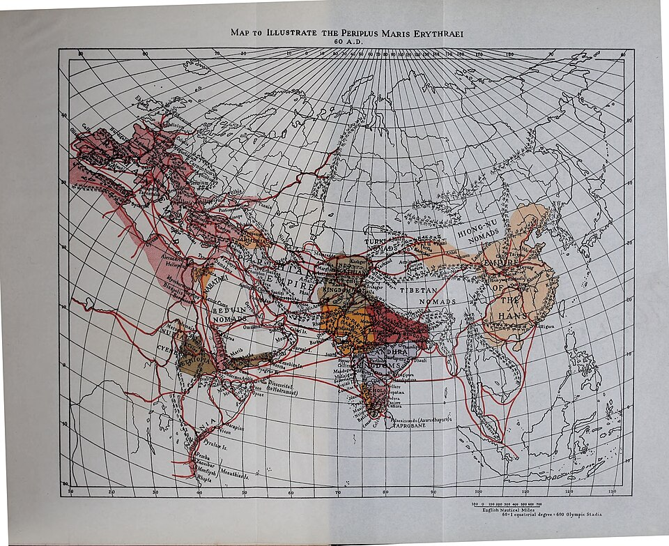
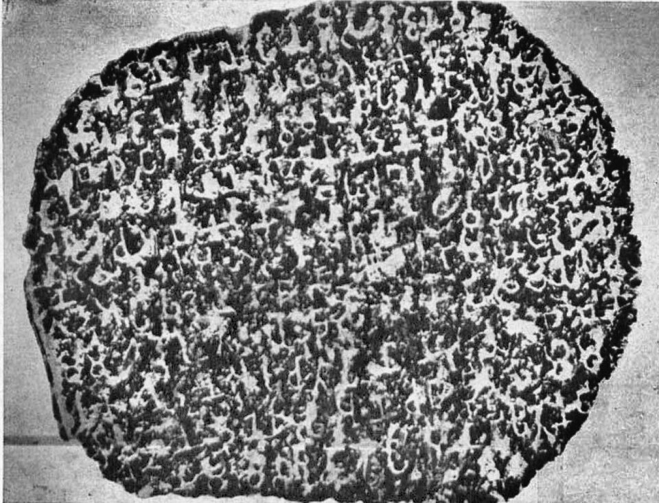

On this page (21 sections)
- A slab of basalt by the Bhatela pond
- What the edicts said
- The island in the creeks
- Aparanta, “the western end”
- The Buddhist stupa: Burud Rajacha Kot
- Purna, the merchant who brought the Buddha home
- A Bodhisattva, a prince and a sea-captain
- Parashurama’s land from the sea
- The Jain Sopara
- Suppara in Greek: the Periplus and Ptolemy
- What came and went: amphorae, beads and coins
- Satavahanas and Kshatrapas: a frontier on the creeks
- Names in the caves: the donors of Sopara
- Why Buddhism took root here
- A town of many spellings
- Stones in Gass
- The people of the island
- Was Sopara Ophir?
- Life on the island
- “Real enough”
- Sources for this chapter
Period covered: c. 300 BCE – c. 300 CE
In this chapter. With Ashoka’s edict the coast enters writing. This chapter follows the port of Shurparaka at its height, with its Buddhist stupa, its Jain and Brahmanical traditions, its caves and its Greek-speaking trade.

A slab of basalt by the Bhatela pond
The first words ever written on this coast that anyone can still read were cut into basalt, the dark volcanic stone that underlies the whole of the North Konkan. They were not cut for the people who lived here. They were cut on the orders of a king who ruled from the Ganges valley, more than a thousand kilometres to the north-east, and who called himself Devanampiye Piyadasi, “Beloved of the Gods, of Gracious Look”. We know him as Ashoka, the Mauryan emperor, who reigned from about 268 to 232 BCE. [n25; Sircar EI 32]
Two broken pieces of his words have come out of the ground at Sopara. The first was found in 1882 by the scholar Bhagwanlal Indraji: “a broken slab of basalt bearing parts of some lines of Rock Edict VIII”, lying near the Bhatela pond east of the old town. It holds roughly a third of that edict. The second turned up seventy-four years later, on 1 January 1956, in the village of Bhuigaon near Sopara, in what was then Bassein taluk. It was found by N. A. Gore, librarian of the Bombay Branch of the Royal Asiatic Society; another account, citing the Archaeological Survey’s A. Ghosh, says the finder was “a little boy from Bhuigaon”. This second slab carries a little over half of Rock Edict IX. It went to the Prince of Wales Museum in Bombay, where the epigraphist D. C. Sircar copied it in January 1957 and published it in Epigraphia Indica. Both stones are now in the same building, renamed the Chhatrapati Shivaji Maharaj Vastu Sangrahalaya (CSMVS). [n02; Sircar EI 32; Shah 2020] [n22; CSMVS]
The record is not perfectly tidy, and it is worth saying so at the start, because almost everything in this chapter comes with a footnote of doubt. One widely read summary says that Indraji found fragments of both Edicts VIII and IX in 1882, “in an old Muslim graveyard near Ramkund”, and that the 1956 Bhuigaon piece was a fragment of Edict XI. Sircar’s primary publication says otherwise: Edict VIII in 1882, from near the Bhatela pond, and Edict IX in 1956, from Bhuigaon. A later listing in the Hultzsch corpus files the Gore piece under VIII. This book follows Sircar, as the man who actually copied the stone, and as the reading the 2020 study by Monish Shah, Siddharth Kale and Jainacharya Bhagyayashsuri also follows. [n02; Wikipedia: Sopara; Sircar EI 32] [n25; Sircar EI 32]
Sircar drew a large conclusion from these small pieces. The 1882 find, he wrote, “suggested that a complete set of the fourteen Rock Edicts of Asoka must have originally existed near Sopara”. The edicts here seem to have been engraved in groups on separate slabs, as at Erragudi in the south, rather than on a single great boulder. Somewhere in the fields and ponds of Sopara, in other words, there may once have stood the whole of Ashoka’s public creed, slab after slab. Two fragments survive. The rest is gone, or still underground. [n02; Sircar EI 32]

There is a second primary witness to the 1956 find, and it settles the argument over which edict the Bhuigaon stone carries. The Archaeological Survey’s annual review, Indian Archaeology 1955–56, reported it under the heading “Inscription of Asoka, Bhuigaon (Sopara), District Thana”, in words worth giving whole: “A broken part of an Asokan inscription was discovered by a school-boy and was brought to the notice of Shri N.A. Gore, Assistant Secretary and Librarian, Bombay Branch of the Royal Asiatic Society. On examination, it turned out to be a damaged version of the Ninth Edict, a part of the Eight Edict from the same place being already known. It is now almost certain that Sopara contained a complete set of the Rock-edicts of Asoka.” The review ranked it “the earliest” of the epigraphical discoveries of that year. So the two stories about the finder can both be true: a schoolboy from Bhuigaon picked up the stone, and Gore, the librarian, was the first scholar to see it. And the Survey’s own record says Ninth Edict, not Eleventh. The Wikipedia line calling the Bhuigaon piece a fragment of Edict XI conflicts with the primary text and should be dropped. [n24 §3; IAR 1955–56] [n22; Sircar EI 32]
The same volume of the review, as it happens, reported a wooden rib in the Buddhist chaitya cave at Bhaja, up on the Deccan edge, inscribed in characters of the second century BCE. The coincidence is a small picture of the world this chapter describes: in one year’s work, the Survey logged an Ashokan stone from the creeks at Sopara and a dated Buddhist hall on the road inland. [n24 §3; IAR 1955–56]
Scholars of the coast have drawn the obvious conclusion. Pia Brancaccio, writing in 2023 on the ports of the western Deccan, takes the two edict fragments as grounds for calling Sopara “probably the oldest of the Ulhas ports”, following the epigraphist Harry Falk. The Bombay Gazetteer of 1882, which dated the edicts to 225 BCE, had already called their carving “the earliest known fact in the history of the Thana coast”. [n36 §1; Brancaccio 2023 p. 11; Gaz. XIII-II pp. 400–401]
The Shah study calls the Sopara edict “perhaps not only Sopara’s but also Mumbai’s earliest historical evidence”. It is the moment this coast steps out of prehistory, out of the world of microliths and shell middens of the last chapter, and into the written record. [n02; Shah 2020] [n23; Shah 2020]
What the edicts said
The Sopara pieces are too broken to read as a running text. Sircar quotes only words: Devanampiye Piyadasi in the first line of the Edict IX slab, and amnaye chu edisaye in the fourth. He notes the shapes of the letters too, the “cork-screw” r and the y drawn like a plough or in three parts. But because Ashoka had the same edicts carved across his empire, their content is known from better-preserved copies, such as the one at Kalsi in the Himalayan foothills. [n22; Sircar EI 32; Wikipedia: Major Rock Edicts]
In those versions, as translated by E. Hultzsch in 1925, Rock Edict VIII contrasts the “pleasure-tours” of earlier kings, who went out hunting, with Ashoka’s own “tours of morality”, which he began after his tenth year on the throne, including a visit to Sambodhi, the place of the Buddha’s enlightenment at Bodh Gaya. Rock Edict IX dismisses the ceremonies people perform at illness, marriage, birth and the start of journeys as bearing little fruit. What bears much fruit, it says, is the practice of morality: courtesy to servants, reverence to elders, gentleness to animals, gifts to ascetics and Brahmins. [n22; Wikipedia: Major Rock Edicts]
These are strange words to find on a muddy creek-island on the Arabian Sea, and they raise a question the sources cannot answer: who read them? The script is Brahmi, and the language is Prakrit, a spoken Indo-Aryan tongue of the Mauryan age, not Sanskrit. The edict proves that writing and the imperial language had reached the Konkan coast by the third century BCE. It does not tell us whether more than a handful of officials, merchants and monks on this coast could make sense of the letters. [n22; Inferences]
It is worth noticing what the Sopara edicts were for. Edict IX is a sermon against costly ritual. It tells people that the rites they perform when a child is born, when a daughter marries, when someone falls ill or sets out on a journey, are of small fruit. On a coast where, as later evidence shows, every voyage was a gamble and every return a celebration, the line about journeys would have had an edge. Whether anyone on the quays took the emperor’s advice is a question no source answers. What the stones do show is that in the third century BCE the Mauryan state thought this creek-island important enough to receive a full public statement of its creed, and that it said so in a Prakrit of the north, cut in Brahmi letters. [n22; Wikipedia: Major Rock Edicts; Inferences]
The island in the creeks
To understand why an emperor would plant his words here, it helps to picture the ground as it then was. Sopara sat on what was, in effect, a large island. The Vaitarna river formed its northern edge, and the Vasai Creek, the mouth of the Ulhas, formed its southern edge. A narrow channel ran parallel to the coast and joined the two rivers, and the ancient port was probably on that channel. Islands to the west and the mainland to the east sheltered it from the open sea. A lake that has since dried up was once part of the harbour. In the Early Historical period, a study of the coast by Sila Tripati and A. S. Gaur of the National Institute of Oceanography found, Sopara faced Agashi island to the north and Bassein to the south, with anchorages in the backwaters. [n01; Pandit, LiveHistoryIndia 2017] [n02; Wikipedia: Sopara, citing Tripati & Gaur 1997]
The sea itself stood a little higher. Specialists cited in the 2020 study put sea level about half a metre above today’s around the second and third centuries BCE. Over the following two thousand years the channels silted up, slowly at first. Creek navigation went on into the nineteenth century, with vessels of about twenty tonnes. A seventeenth-century sea manual from Kutch still recorded cargo moving through the Bolinj–Sopara creek. [n02; Shah 2020, citing Arunachalam 2002; Wikipedia: Sopara, citing Tripati & Gaur 1997]
The 1882 Gazetteer explained the choice of site in a sentence that still reads well: “Its height above the surrounding salt marsh, its rich soil and fresh water, and its nearness to the holy Vaitarna, Jivdhan, Tungar and Nirmal must early have made Sopara a chosen settlement. Its distance from the coast and its broad backwater guarded it from pirate raids or the forays of the wild hill and forest tribes, and its water connection with the Vaitarna on the north and the Ulhas or Bassein river on the south”, together with “the easy land route along the Tansa valley”, “made it an early centre of trade”. That is the compiler’s reasoning, not an excavated fact, but every later study has followed it. [n37 §6; Gaz. XIV p. 316] [n36 §2b]
Brancaccio’s modern reading of the same ground goes a step further. Sopara, she writes, sat “on a large coastal island right at the river mouth, with its lagoon and coastal canals”, the “most convenient and accessible location for docking transoceanic ships within the Ulhas’ estuary system”. Kalyan lay far up the estuary. Between the two, she suggests, goods moved on small boats, “likely on wooden canoes comparable to the one unearthed at” Pattanam on the Kerala coast. In her picture the estuary had a division of labour: Sopara the deep-water mouth where the big ships came in, Kalyan the inland market where the roads from the Ghats came down. This is an informed reconstruction, not something dug up here, and it should be read that way. [n36 §2b; Brancaccio 2023 p. 10]
The ground itself has begun to answer. In 2018 the archaeologist Siddharth Kale reported a stone anchor near Gass and its Taki Pada hamlet, on the southern edge of old Sopara’s island, at a spot the 2020 study describes as coinciding “with the place where an earlier port would have been; which has now been filled up due to siltation”. Nearby stands a mosque still called the Bandar Masjid, the “harbour mosque”, a name that remembers the water long after the water left. The anchor’s date is not given, and stone anchors are notoriously hard to date; it may belong to this chapter or to any later one. In 2020 a survey by the University of Warsaw and an Indian partner body, the INHCRF, mapped old river channels, now buried, lying about half a metre below present sea level. The ancient waterways of the island are still there, under the gardens and the new buildings. [n36 §1; Shah 2020; Brancaccio 2023 p. 12 n. 30] [n42 §1]
Gass will matter to this story more than once. In 1882 it was the last point the dying creek still served from the south: the Gazetteer recorded that small boats of ten or twelve tons came “from the south as far as Gas”, about a mile from Sopara, while “at Sopara the creek is dry”. A Portuguese writer of 1728 had already asked for the channel between Sopara and Bolinj to be dug “as deep as the height of a man, otherwise it would soon be filled to a level with the fields”. Those are the end points of a long silting. At the start of it, in the centuries of this chapter, the water reached the town itself. [n36 §6; Gaz. XIV pp. 314–315, 322] [n42 §1]
Brahmanical tradition drew the bounds of Shurparaka in the same way: the Sahyadri, the Western Ghats, to the east; the Arabian Sea to the west; the Vaitarna to the north; and the Ulhas to the south. Islands and creeks protected the harbour, and local boats piloted ships in. [n01; Shah 2020] [n02; LiveHistoryIndia]
This was a place that faced two ways. To the west lay the sea routes. To the east, trade roads climbed from Sopara, by way of Kalyan, up through the Ghats to Nashik, Paithan and Ter on the Deccan plateau. One of those roads ran over the Naneghat pass, whose rock-cut Brahmi inscriptions of the second and first centuries BCE are linked to a Satavahana queen named Nayanika or Naganika. A port on this island was a hinge between the inland kingdoms and the ocean. [n02; Shah 2020] [n22; Wikipedia: Naneghat]
Aparanta, “the western end”
In Ashoka’s world this coast had a name. Rock Edict V lists Aparanta, “the western end”, alongside the Yonas (Greeks), Kambojas and Gandharas, peoples on the edges of the empire; the readings vary from one version to another. Sopara is generally identified as Aparanta’s capital. [n23; Wikipedia: Aparanta; Wikipedia: Major Rock Edicts; Shah 2020] [n02; Wikipedia: Sopara]
The variation in the readings matters, and it is worth being exact. In Ven. S. Dhammika’s translation, Edict V says that Ashoka’s new officers of the Dhamma “work among the Greeks, the Kambojas, the Gandharas, the Rastrikas, the Pitinikas and other peoples on the western borders”. The version carved at Girnar in Gujarat is read by other scholars as naming “Aparantas” at that point. If the phrase is only a general “western borderers”, then Ashoka did not name the Konkan there at all, and the argument that he knew this coast as a named province rests on the Sopara stones alone. Edict XIII, which lists the frontier peoples again (Greeks, Kambojas, Nabhakas, Nabhapamkits, Bhojas, Pitinikas, Andhras and Palidas), does not mention Aparanta. The firmest proof that Ashoka’s government reached the creeks is still the basalt from the Bhatela pond and Bhuigaon. [n24 §6; Dhammika, Edicts of King Asoka]
The governor’s name comes from a later stone. The Junagadh rock inscription of the Kshatrapa ruler Rudradaman, of about 150 CE, says that under Ashoka a Yona king named Tushaspha governed Aparanta; Romila Thapar cites it so. A Greek, in other words, or a man of the Greek-speaking north-west, held this frontier for the Mauryan emperor, four centuries before Rudradaman recalled him. [n24 §6; Wikipedia: Aparanta, citing Thapar 2001 p. 128]
Aparanta was not one of the old “great countries”. The sixteen Mahajanapadas of the early Buddhist lists stretch across the Ganges plain and its edges; the only one in the Deccan is Assaka, on the Godavari far inland, where the Sutta Nipata places a Brahmin teacher named Bavari. Sopara, Aparanta and the Konkan appear in none of the lists. What linked this coast to the old heartland was a road, the Dakshinapatha, the “southern route”, which by the Buddha’s time is thought to have run from Varanasi by way of Vidisha to Pratishthana, Paithan, with a Mauryan branch from Ujjain to the Gujarat ports. Paithan, as this chapter will show, was the inland end of Sopara’s world. [n24 §6; Wikipedia: Assaka; Wikipedia: Dakshinapatha]
The Sri Lankan Buddhist chronicle called the Mahavamsa, composed around the fifth century CE, tells what happened next in its own way. After the Third Buddhist Council, it says, Ashoka’s teachers sent missionaries to the borderlands. To Aparanta went a monk called Dhammarakkhita, a Yavana, a Greek or Bactrian. He preached, the chronicle says, to 70,000 people and ordained more than a thousand men and a thousand women. [n02; Shah 2020; LiveHistoryIndia] [n15; Thana Gaz. XIV p. 319]
Even the chronicle’s numbers come in two versions. The Gazetteer, following its own reading of the Mahavamsa, gives 70,000 hearers, with a thousand men and more than a thousand women, “all Kshatriyas”, entering the order. A modern summary of the same chronicle (chapter xii, verses 34 to 36) gives 37,000 converts. The detail that the converts were all of the warrior class is the chronicler’s, and it tells us more about how a Sri Lankan monk of the fifth century wished the mission to be remembered than about who lived on the Konkan in 250 BCE. And the larger frame is shaky too: the chronicles place the missions after a Third Buddhist Council, which Ashoka’s own edicts never mention. [n37 §1; Gaz. XIII-II pp. 404–405] [n24 §6; Wikipedia: Aparanta; Wikipedia: Dharmaraksita]
The Gazetteer added one more thread that ties the Greek monk to real stones: Yavanas, Greeks or westerners, appear as donors in several of the cave inscriptions of western India. A Yavana missionary on this coast would not have been the only foreigner in its Buddhist world. [n36 §1; Gaz. XIII-II p. 400 and p. 407 n. 1]
The Mahavamsa was written centuries after the events it describes, and its numbers belong to the language of chronicle, not census. But in 1882 the Bombay Gazetteer, written with Indraji’s help, put the two pieces of evidence together. The edict fragment, it reasoned, “seems to show that [Sopara] was the capital of Aparanta in B.C. 250, and makes it probable that the Yavana Dharmarakshita… came and preached the law in Sopara”. Indraji believed Dhammarakkhita made Sopara his base. This is inference, built on a stone and a chronicle, and it should be read as such. But it is a reasonable one. [n15; Thana Gaz. XIV p. 319] [n02; Shah 2020]
There is a second clue to how far the Mauryan world reached into the creeks. When the Archaeological Survey of India and the British Academy dug at Sopara together in 1993, they found small fragments of Northern Black Polished Ware, the glossy, metallic-looking pottery that is a hallmark of the Gangetic plain in the Mauryan centuries. It points to links with the Ganges valley and the Mauryan sphere by about the third century BCE. No earlier layer, Chalcolithic or Iron Age, has been shown at Sopara. Siddharth Kale, who has surveyed Vasai taluka, says that Sopara is apparently the only site on the Konkan with unbroken human habitation over the last 2,300 years. [n01; Shah 2020] [n23; Shah 2020]
Each of those statements needs its footnote. The 1993 work (one project volume dates it to 1992) was published in brief by Howell and Sinha in 1994; Brancaccio, who relies on that report, describes it as “trial trenches” dug south-east of the stupa, which uncovered “disturbed” sequences with no secure layering. The primary excavation report was not found for this book. Kale’s 2,300 years is a remark to the press, not a study. And no pre-Mauryan layer, no radiocarbon date older than the edicts, has been found at Sopara. A shell from a beach-dune rock near Nala Sopara has been dated to about 3,250 years before the present, but it is a marine shell, not a human trace, and its context is not recorded. The one excavator’s caution that matters most is Brancaccio’s own: digging at Sopara is “especially difficult” because the site is built over. [n24 §5; n36 §1; Brancaccio 2023 p. 11]
The Mahavamsa’s reference to a Greek missionary also hints at something else: a mixed population. A Jain text, as reported by the 2020 study, says that the liquor-making Kalals of Sopara were not excluded and could eat with others, another sign of a cosmopolitan town. [n01; Shah 2020]
The Buddhist stupa: Burud Rajacha Kot
West of the Bhatela pond, in the village of Merdes (Mardes), there was a mound that local people called Burud Rajacha Kot, “the fort of the Burud king”. By the nineteenth century the name had grown a legend of a lost palace. It was not a palace. It was a stupa, a solid Buddhist relic mound, and its story is the clearest thread from the Mauryan age to the end of this chapter and beyond. [n18; Wikipedia: Sopara; LiveHistoryIndia] [n02; Wikipedia: Sopara]
The stupa was first built in the Mauryan period, the third century BCE. It was enlarged between the first century BCE and the third century CE, and expanded again much later, in the Rashtrakuta period. Today only a mound survives. [n02; LiveHistoryIndia] [n23; Shah 2020]
Flash-forward: April 1882
It is worth stepping forward in time here, because almost everything we know about what lay inside this mound comes from a single season of digging, eighteen centuries after its last great rebuilding.
In April 1882 (some sources say February), Bhagwanlal Indraji opened the mound at Merdes. Indraji was a Nagar Brahmin from Junagadh in Kathiawar, born on 8 November 1839, a self-made archaeologist, epigrapher and coin specialist who had come to Bombay under the patronage of the physician-scholar Bhau Daji Lad in 1862. He would be made an honorary member of the Royal Asiatic Society in 1877 and an honorary doctor of Leiden University in 1884, and he died in Bombay on 16 March 1888. Wikipedia describes him as the first Indian to excavate a site and publish a report of this kind. [n25; Wikipedia: Bhagwanlal Indraji] [n02; Wikipedia: Sopara]
Inside the mound he found a brick chamber, and inside that a large stone coffer. The coffer held caskets nested one inside another, of copper, silver, stone, crystal and gold. With them lay many gold flowers, a copper casket holding stones, gold flowers and scented powder, pieces of jewellery, and “fragments of a begging bowl believed to have been used by Gautama Buddha”. There was a single silver coin of a Satavahana king. And there were eight small bronze figures: seven Buddhas and Maitreya, the Buddha who is to come. [n02; Asiatic Society of Mumbai; Shah 2020; Wikipedia: Sopara]
The bronzes are not of the stupa’s first age. LiveHistoryIndia names them as the six past Buddhas (Vipasyi, Shikhi, Vishvabhu, Krakucchanda, Kanakamuni and Kashyapa), the historical Buddha Shakyamuni, and Maitreya, and dates them by style to the seventh or eighth century CE; other sources say the eighth or ninth. A study of the “Bronzes from Sopara” calls them stylistically later than the stupa. The Shah study suggests they were probably put inside when the stupa was enlarged or repaired, perhaps under the Rashtrakutas. Since the bronzes are about a thousand years younger than the Mauryan core, the stupa was a living monument for roughly a millennium. [n02; LiveHistoryIndia; Tibetan Buddhist Encyclopedia PDF; Shah 2020]
The coin is a small puzzle of its own. The Shah study and Wikipedia name it as a silver coin of Gautamiputra Satakarni. LiveHistoryIndia names it as a coin of Shri Yajnashri Satakarni, a second-century Satavahana king. The 1882 Gazetteer itself called the ruler “Gotamiputra Yajnashri Shatakarni”, joining the two names in one, and drew a broad conclusion: that “about the middle of the second century after Christ (A.D. 160), Gotamiputra Yajnashri Shatakarni was the ruler of the Konkan; and that Sopara was then a Buddhist religious centre, and had skilful masons, coppersmiths, and goldsmiths.” It may be that the Gazetteer’s combined name is the root of the later disagreement; that is a guess. For years the question seemed to wait on Indraji’s own paper, “Antiquarian Remains at Sopara and Padana”, published in the Journal of the Bombay Branch of the Royal Asiatic Society in 1882. The later research for this book did reach that paper, and its readings of Sopara’s donors appear further on in this chapter. On the coin, though, the newest word comes from Brancaccio, and it complicates the old reading rather than choosing between the two names. Brancaccio dates the gold reliquary, from the style of its ornament, to the first century CE, and describes the coin found with it as a Kshatrapa imitation of a Satavahana coin: a piece struck by the northern rivals in the manner of the Deccan kings. If she is right, the relics were sealed in the stupa around the time the Kshatrapas held this coast, a century before the date of 160 CE that the Gazetteer drew from its reading of the coin. The Gazetteer’s broader conclusion still holds either way: the casket’s workmanship shows Sopara had “skilful masons, coppersmiths, and goldsmiths”. [n02; Shah 2020; LiveHistoryIndia; Wikipedia: Sopara] [n15; Thana Gaz. XIV p. 320] [n36 §1; Brancaccio 2023 p. 11 n. 28; Gaz. XIII-II p. 409]
Even the credit for the dig is not quite settled. A 1910 edition of James Fergusson’s history of architecture credits James M. Campbell, the editor of the Gazetteer, with excavating the stupa in 1882. Every other source in our notes names Indraji. [n25; Fergusson 1910 via Heidelberg]
The Bombay Government presented the relics to the Asiatic Society of Bombay, now the Asiatic Society of Mumbai, which still holds them. The great stone coffer from the centre of the stupa stands in the Society’s vestibule. [n02; Asiatic Society of Mumbai]
The mound did not rest after Indraji. In 1939–40 M. M. Qureshi of the Archaeological Survey re-excavated it and found stone lintels, two small stupas on the south side, and glazed sherds of the Muslim period. More than ten votive stupas lie beside the main one, some unearthed in more recent digging by M. S. Chauhan, along with at least four kichaka (bracket-figure) carvings that point to a temple nearby; no date or report for Chauhan’s work was found. On 6 January 2012, workers digging a garden near the stupa uncovered a pillar carved with an image of the Buddha, and the digging was stopped. [n02; Shah 2020; TOI via Kerala Mahabodhi blog]
The stupa is protected by the Archaeological Survey of India. In 2014 the state decided to make it the hub of Maharashtra’s Buddhist circuit; a later report said it “still lies largely neglected”, and a nine-foot statue of the Buddha, donated by a trust in Pune, was installed about 200 metres away. Outlook Traveller called it a candidate for “India’s least visited tourist sight”. Of the ancient port itself, LiveHistoryIndia writes, “no traces… remain”: only a few protected mounds and a dried-up lake. [n02; Buddhistdoor; Outlook Traveller; LiveHistoryIndia]
That is the end of the flash-forward. Back in the centuries around the turn of the era, the mound at Merdes was a working shrine, newly enlarged, and the town around it was at the height of its first fame.
Purna, the merchant who brought the Buddha home
Every great port needs a founding story, and Sopara’s Buddhist one is about a sailor.
Its oldest form is short, and it does not mention a ship. In the Pali canon, in the Majjhima Nikaya, there is a discourse numbered 145, the Punnovada Sutta, “the advice to Punna”. It is set at Savatthi, Shravasti, in the Ganges plain. A monk named Punna tells the Buddha: “there’s a country named Sunaparanta. I shall live there.” The Buddha’s answer is a warning: “The people of Sunaparanta are wild and rough, Punna.” Punna is not put off, and by the end of the discourse he has “set out for Sunaparanta”. For this coast, that is the heart of it. The text does not name Sopara, and the identification of Sunaparanta with Aparanta, and of both with this coast, comes from commentators and later scholars. Tradition holds the sutta to be older than Ashoka, but its date of composition is unknown. [n24 §6; MN 145, Sujato translation, SuttaCentral]
What the sutta preserves is a point of view. From the monasteries of the Ganges, the far west was a frontier of “wild and rough” people, a hard posting for a monk. Every later version of the Punna story keeps that frontier feeling and turns it around: the rough western land becomes the hero’s home, and the hero becomes rich.
The fullest version is told in the Divyavadana, a Sanskrit collection of Buddhist tales compiled around the beginning of the Common Era, in the section called the Purnavadana. The Purnavadana is one of about half a dozen tales found in every surviving version of the collection. Its hero is Purna, also called Purna Maitrayaniputra, or Punna in Pali. He is the son of a rich Sopara merchant by a slave girl, or in another telling a low-caste maid. Denied a share of the family property, he goes to sea and becomes a leader of trading voyages. [n02; LiveHistoryIndia; 84000 Knowledgebase] [n15; Thana Gaz. XIV pp. 320–321]
The 1882 Gazetteer, summarising the French scholar Eugène Burnouf’s translation from Nepalese and Tibetan sources that seemed to be “of the fourth or fifth century”, gives a picture of the city the tale imagines. Sopara is “the seat of a king, a city with several hundred thousand inhabitants, with eighteen gates, and a temple of Buddha adorned with friezes of carved sandalwood”. Caravans of merchants come from Shravasti, in the Ganges plain. Great ships with five hundred merchants trade to distant lands. The goods are fine cloth and goshirsha sandalwood, and a strong merchant guild runs the trade. One merchant in the story asks: “Who… that has made six safe voyages, has ever been known to tempt Providence by trying a seventh?” [n15; Thana Gaz. XIV pp. 320–321]
A modern summary gives slightly different details: a city with a fortification, a moat and seventeen gates. The difference between seventeen and eighteen cannot be settled without the Sanskrit text. [n15; LiveHistoryIndia]
The Gazetteer’s summary adds colour that rewards a slow reading. The cloth of the tale is “blue, yellow, red, and white”. The sandalwood is goshirsha, “cow’s head”, “brought apparently from the Kanara or Malabar coast”, so that Sopara in the story is not only an exporter but a place where goods from further south were gathered and sent on. “There was much risk,” the summary says; “Two or three successful voyages made a merchant a man of mark.” And: “The coinage was gold, and many of the merchants had huge fortunes. A strong merchant-guild ruled the trade of the city.” [n36 §2d; Gaz. XIV pp. 320–321]
The guild’s rules
The most remarkable passage in the tale has only recently been put in front of English readers in the context of the port itself. Brancaccio, using Joel Tatelman’s translation of the Purnavadana, sets out the scene. Ships arrive at Sopara from across the great ocean. Purna goes out to them without entering the city and negotiates a cargo: a price of 1,800,000 gold coins, with 300,000 paid down as a deposit. That brings him up against the town’s merchant guild, whose rule, as the tale gives it, runs: “No one of us,”may approach these [visiting] merchants independently. Only the guild as a body may purchase their goods. Anyone who deals with those merchants on his own shall be fined sixty silver coins.” [n36 §2d; Brancaccio 2023 pp. 12–13, citing Tatelman 2000 p. 56]
Around that rule the tale sketches a whole commercial order. The guild owns warehouses. It fixes the resale margin at double the cost. And the text speaks of “customs, duties, escort-charges and freight fees”, the ordinary friction of a harbour. Brancaccio reads the “escort-charges” as a pilotage fee, the price of being guided through the shoals of an estuary port; she draws the comparison from the Greek Periplus, which, as we shall see, describes royal pilot-boats towing ships into Barygaza. [n36 §2a, §2d; Brancaccio 2023 p. 13]
How far should a reader trust this as a picture of Sopara? The Gazetteer dated the text “apparently of the fourth or fifth century after Christ”; Brancaccio takes it to reflect conditions at “the beginning of the Common Era”. It is Buddhist hagiography, preserved in Sanskrit and Tibetan recensions, and its guild rules are best read as a literary description of how a port guild was imagined to work. They are not Sopara’s bylaws. But they fit what other evidence says about guilds in this age: the Arthashastra’s rules for traders, and, closer to home, an inscription at Nashik that records money deposited with weavers’ guilds at a fixed rate of interest, as we shall see below. The story-teller knew how a guild behaved, even if the guild he described never existed. [n36 §2d; Gaz. XIV p. 320 n. 1; Brancaccio 2023]
In the tale, Purna meets the Buddha at Shravasti and invites him to Sopara. He builds a hall of sandalwood near the town, and the Buddha arrives with five hundred monks, “flying through the sky”. Purna founds monasteries around Sopara, and, in the Gazetteer’s words, “turned the people of the Konkan from their old faith to Buddhism”. [n02; 84000 Knowledgebase; LiveHistoryIndia] [n15; Thana Gaz. XIV p. 321]
The Pali tradition of Sri Lanka tells a parallel story but sets it in a land called Sunaparanta. There, merchants give Punna part of their cargo of red sandalwood after he saves them from a storm, and from it he builds the Candanasala, the Sandalwood Hall. The Buddha comes with five hundred arahants, stays one night, and leaves before dawn. [n02; DPPN; palikanon.com]
The Gazetteer’s historical volume keeps the storm too: after Purna saved them at sea, it says, the grateful merchants built a Buddhist temple in Sopara. And it tied the legend to the local landscape. The tale names a hill called Musalaka, and the Gazetteer identified it with Padan hill, the low rise in Salsette across the creek where Indraji also recorded remains. Whether that identification is right, nobody can now say; it shows how quickly the story was mapped onto the ground. An anonymous web essay adds that Pali texts know a pair of merchant brothers, Punna and Chulla Punna; it is a weak source and is noted here only as a lead. [n36 §2d; Gaz. XIII-II p. 408] [n24 §6; Gaz. XIV p. 321, Padan section] [n36 §2d; MHS India blog 2023]
Indraji, in 1882, recorded a local tradition that adds a further scene. The Buddha, it said, converted a Brahmin sage named Vakkali and five hundred widows here, and gave them relics of his nails and hair, over which they built the “Widows’ Stupa”. [n02; Shah 2020] [n01; Shah 2020]
None of this is history. LiveHistoryIndia judges the tale’s historicity “questionable” and the Buddha’s visit “not historically true”; the archaeologist Suraj Pandit reads it as a symbol of Sopara’s rise as a pilgrimage centre. There is no historical evidence that the Buddha ever came near this coast. But the story was taken seriously far inland. In Cave 2 at Ajanta, in the fifth century CE, painters put the Purnavadana on the wall. The merchant of Sopara had become part of the shared picture-book of Indian Buddhism. [n02; LiveHistoryIndia] [n01; Pandit, LiveHistoryIndia]
The same modern summary preserves a revealing phrase: in the old texts Aparanta is described as “the region which is not habituated by civilised people”. Seen from the Ganges, this coast was a frontier. Purna’s story is the frontier’s answer: a local boy, half-slave by birth, who brought the teaching home on his own ships. [n15; LiveHistoryIndia]
A Bodhisattva, a prince and a sea-captain
Buddhist literature names the port in other places too, though each needs care.
In one of his former births, says the 1882 Gazetteer, Gautama Buddha “was Bodhisat Suppurak, that is, a Bodhisattva of Sopara”. The Supparaka Jataka (number 463 in the collection of birth stories) tells of a master mariner of that name. The historian Himanshu Prabha Ray reads it as portraying a prosperous port trading with south-west Asia, Gujarat, Malabar and Sri Lanka. Wikipedia dates the tale to about the sixth century BCE, which is doubtful: the Jataka texts are much later compilations. And there is a further caution. In the Jataka text, the mariner Supparaka sails from Bharukaccha, Broach, not from Sopara. The link to this town rests on the name. [n02; Shah 2020; Wikipedia: Sopara] [n15; Thana Gaz. XIV p. 316; Wikipedia: Nala Sopara]
The Mahavamsa tells the founding legend of Sri Lanka itself, and Sopara is in it. Prince Vijaya, banished by his father, is put to sea with his followers. In George Turnour’s translation of 1837, quoted by the dictionary Hobson-Jobson: “The King compelling Wijayo and his retinue, 700 in number, to have the half of their heads shaved, and having embarked them in a vessel, sent them adrift on the ocean… Wijayo himself landed at the port of Supparaka.” From there, in the legend, he goes on to Lanka and becomes its first king. [n15; Hobson-Jobson, “Supara”] [n02; Wikipedia: Sopara, citing Thapar 1997]
None of these tales can be dated to the events they describe. What they show is how far the name had travelled. A chronicler in Sri Lanka, a storyteller of the Jatakas and the painters at Ajanta all knew Supparaka as a place where ships put in and set out.
Parashurama’s land from the sea
Hindu tradition claims the place just as firmly, and with an older-sounding story.
In the Mahabharata and the Puranas, Shurparaka is land won back from the sea by Parashurama, the warrior-sage and avatar of Vishnu, as his own dwelling, and so it became a tirtha, a holy crossing-place. In the Brahmanda Purana, Parashurama throws his sacrificial ladle, the sruva or shurpa, into the ocean; the sea retreats as far as it flies, and the reclaimed land is named Shurparaka. The Harivamsa describes Shurparaka as a city “500 bows that is about a thousand yards broad, and 500 arrows… high”, built on the belt of land the sea gave up when Parashurama shot his arrow and won the Konkan from the waves. The town was known as Parashuramatirtha. [n15; Thana Gaz. XIV p. 316; Wikipedia: Nala Sopara, citing Pargiter 1922] [n01; Green Message, Brahmanda Purana; Shah 2020]
The “winnowing basket” meaning of shurpa, often repeated as the origin of the town’s name, is traditional. No linguistic study supporting it was found. Wikipedia glosses Shurparaka loosely as “city of braves”, which is no better grounded. [n01; Gaps] [n22; Wikipedia: Nallasopara]
In the Mahabharata’s account of the Pandavas’ pilgrimage, the Vana Parva, the brothers stop at Shurparaka on their way from Gokarna in north Kanara to Prabhasa (Veraval) in Kathiawar. The Gazetteer’s translation reads: “the Wish-Granted One saw the very holy Shurparaka. Then, crossing a narrow belt of sea (the Bassein creek), he came to a world-famed forest, where, in times of yore, gods had done penance and kings sacrificed… Here the Long and Sturdy Armed One saw the altar of the son of Richika [Parashurama], foremost among bowmen…” The same epic has Arjuna visit “very holy Surparaka” on his western tour, and in the Sabha Parva, in the story of Sahadeva’s conquests in the south, the youngest Pandava “reduced to subjection, Surparaka and Talakata, and the Dandakas also”: the holy place appears there as a country to be conquered, beside the forest of Dandaka. The Padma Purana lists 108 tirthas there, and the Skanda Purana says vows made here bring multiplied merit. [n15; Thana Gaz. XIV, Kanheri n.] [n01; Shah 2020; Jatland] [n24 §6; Krishnakosh, Sabha Parva ch. 30]
The Gazetteer of 1882 dated the Mahabharata to “B.C. 1400” and even called Sopara “the capital of the Konkan from about B.C. 1500 to A.D. 1800”. Those dates are Victorian guesses and must not be repeated as fact. The Gazetteer itself admitted that the pilgrimage passage might be “a late Brahmanical interpolation”. A popular account adds the Ramayana to the list of texts that name Shurparaka as a port; no verse of the Ramayana backing this was found. [n15; Thana Gaz. XIV p. 316; LiveHistoryIndia] [n31; Gazetteer p. 314]
What the texts do show is a landscape that had become sacred in Hindu memory: a coast pulled out of the sea, with the holy Vaitarna to the north, the hill of Tungar rising behind, and the pools of Nirmal. The 1882 Gazetteer linked Sopara’s early settlement to “its nearness to the holy Vaitarna, Jivdhan, Tungar, and Nirmal”. Its writers even wondered whether Tungar was Ptolemy’s “Dunga”. The temples that stand there now are much later, and their stories belong to later chapters. [n03; TG-XIV p. 335; TG-XIV Tungar n.]
The Gazetteer also gave its own summary of the order in which the coast’s religions left their marks. Brahman “holy places on the Vaitarna and in and near Supara and Bassein” were, it judged, the earliest religion whose traces remain. Nirmal, the hill-village west of Sopara, has its own founding legend in a text called the Nirmal Mahatmya: Parashurama defeats a demon named Vimal and sets up the Vimaleshvar linga there. The Gazetteer treats this plainly as legend and adds a guess of its own, that the name might come from Dravidian words for “water” and “hill”. Neither the legend nor the etymology can be dated. What they show is how deep the claim of Parashurama runs in the place-memory of the island: he is not only the hero who pulled Shurparaka from the sea but the founder of its neighbouring shrines. [n37 §1; Gaz. XIII-I p. 66; Gaz. XIV p. 292 n.]
There is a second ancient explanation of the name, alongside the ladle and the basket. The nineteenth-century Indologist Christian Lassen, quoted by José Gerson da Cunha, read Surparaka either as “fine shore” or from surpa, the winnowing fan, imagining the coast of Parashurama’s land as shaped like one. Both are learned guesses. No modern linguistic study of the name was found. [n37 §6; da Cunha pp. 169–170] [n22 §5]
The Jain Sopara
Jain tradition remembers Sopara too, and has kept its memory longer than anyone.
Jain sources make Sopara the earliest taleti, the foothill shrine, of the sacred hill of Shatrunjaya in Gujarat. They say it was set up by Bharata Chakravarti, eldest son of the first Tirthankara, Rishabhanatha or Adinath, and that the taleti later moved to Valabhi and then to Palitana. The Paumacariyam, the Jain Ramayana, has Lava and Kusha, the sons of Rama, conquer Sopara. In the legend of King Shripala, “their mythical king Shripal is said to have married Tilakasundari the daughter of king Mahasena of Soparaka”. A Gujarati story says that King Vikram, traditionally of 56 BCE, got one of his five magic wands, the panchdand, from Sopara. [n01; Shah 2020] [n15; Thana Gaz. XIV p. 319] [n18; Wikipedia: Sopara]
Jain tradition also places real-seeming people here. Ashoka’s grandson Samprati is said to have protected Jain monks in the region. After a twelve-year famine, it says, Acharya Yakshadevsuri held a recitation of the Agamas, the Jain scriptures, at Sopara, in Vira Samvat 585, about 58 CE by the Jain calendar. These are traditions, not evidence. They show that by the time they were written down, Sopara was a name that Jain writers expected their readers to know. [n01; Shah 2020] [n02; Shah 2020; Gaps]
The Gazetteer of 1882 recorded two further Jain memories: that Jain tradition counted Sopara among its sacred places, with an image of Rishabhadeva, the first Tirthankara, and that one of the eighty-four Jain gachchhas, the lineages of monks, was named after Sopara. Both are traditions; no Jain inscription or excavated Jain building of this period has been reported from Sopara. Remains of Jain temples do exist in and around the old town, including at the tank in Gass that a modern study calls Ram Kund, but none of them has been dated to this age, and the Jain objects from the area that do carry dates are medieval; they belong to later chapters. [n37 §1; Gaz. XIV p. 319] [n42 §2; Shah 2020]
The fullest Jain witness to Sopara, the fourteenth-century pilgrim’s guide of Jinaprabhasuri, belongs to the next chapter. But even here, at the turn of the era, Sopara was one of the very few towns in India claimed by all three of the great traditions of the age: Hindu, Buddhist and Jain. [n15; Takeaway]
Suppara in Greek: the Periplus and Ptolemy
From the sea came another kind of witness: men who wrote in Greek.
Some time in the first century CE (Yule put it at about 80–90 CE; the modern consensus is the middle of the century), an anonymous Greek-speaking merchant wrote a guide to the ports of the Red Sea and the Indian Ocean, the Periplus of the Erythraean Sea. After describing Barygaza, Broach, the great port of the Gulf of Khambhat, he lists the smaller marts to the south. In the Greek, as quoted in Hobson-Jobson: “Τοπικὰ δὲ ἐμπόρια κατὰ τὸ ἑξῆς κείμενα ἀπὸ Βαρυγάζων, Ἀκαβαρου, Σουππάρα, καὶ Καλλίενα πόλις…”, “local marts lying in order after Barygaza: Akabarou, Souppara, and the city of Kalliena”. [n15; Hobson-Jobson, “Supara”]
W. H. Schoff’s English translation runs a little differently: “The market-towns of this region are, in order, after Barygaza: Suppara, and the city of Calliena, which in the time of the elder Saraganus became a lawful market-town.” A scholarly edition glosses it: “Suppara is now Sopara on the coast above Bassein”, Calliena is Kalyan, and Semylla, further south, is Chaul. The Gazetteer of 1882 used the then-current date of 247 CE for the Periplus; that date has since been abandoned. [n02; Periplus, UW; ToposText] [n15; H-J]
The Periplus then adds a line that says a great deal about the politics of the coast: under a ruler called Sandanes (an older reading, “Sandares”, is an unjustified conjecture), Kalyan’s trade was restricted, and Greek ships that landed there were sent under guard to Barygaza. LiveHistoryIndia reads this as a sign of political instability, probably the rivalry between the Western Kshatrapas and the Satavahanas. Sopara, listed first and with no such complaint, seems to have been the open door; Kalyan, a few hours away up the creek, was in some way shut. That is an inference from the text, but a fair one. [n02; Periplus, UW; ToposText; LiveHistoryIndia; Inferences]
Under guard to Barygaza
The whole of the Periplus’s sentence, in Schoff’s 1912 translation (section 52), is worth having in front of us, because it is the only line in the classical record that speaks of this estuary as a working harbour: “The market-towns of this region are, in order, after Barygaza: Suppara, and the city of Calliena, which in the time of the elder Saraganus became a lawful market-town; but since it came into the possession of Sandares the port is much obstructed, and Greek ships landing there may chance to be taken to Barygaza under guard.” [n36 §2a; Schoff, Periplus §52, p. 43]
Picture the scene the sentence implies. A ship from the Red Sea, its skipper and crew Greek-speaking subjects of Rome, comes down the coast past Barygaza and noses into the estuary of the Ulhas. If it goes up to Kalyan, it risks being seized and escorted back north, under guard, to the great port of the Gulf of Khambhat. The likeliest reading is that the ruler who held Barygaza wanted the foreign trade, and its duties, to pass through his own customs house, and that Kalyan lay in a rival’s hands. Sopara, at the mouth of the same estuary, is named without complaint. Brancaccio draws the same conclusion: foreign skippers still tried Sopara first. [n36 §2a; §2 Inferences]
Who were “the elder Saraganus” and “Sandares”? Nobody knows for certain. Schoff’s long note debates whether “Saraganus” stands for a Satakarni, one of the Satavahana kings, and whether “Sandares” might be a Sundara Satakarni; the Gazetteer of 1882 wondered whether “Sandanes” was the name of a tribe, the Shantikas, or a Greek attempt at the title Kshatrapa. The Gazetteer’s summary was blunt: by the Periplus’s time the Satakarnis had lost their hold, and the coast “had passed to a king named Sandanes, who stopped all foreign trade”. That goes further than the Greek text, which says only that the port was “much obstructed”. [n36 §2b; Gaz. XIII-II p. 418; Schoff pp. 197–200]
The next section of the Periplus (53) carries the reader south past Calliena to Semylla (Chaul), Mandagora, Palaepatmae, Melizigara, Byzantium, Togarum and Aurannoboas, and then to a string of islands, “in these places there are pirates”, before reaching the Malabar ports of Naura, Tyndis, Muziris and Nelcynda. The Gazetteer’s explanation of why Sopara had flourished, “its distance from the coast and its broad backwater guarded it from pirate raids”, reads differently with that line beside it. [n36 §2a, §7; Schoff §53, pp. 43–44; Gaz. XIV p. 316]
What a feeder port fed
The Periplus names Suppara in one line and then says nothing about what it bought or sold. That silence is itself a fact, and it needs to be respected: no list of “Sopara’s exports” can be drawn from the Roman-era text. What the Periplus does give is the trade of Barygaza, one stage to the north, the great port to which the Konkan harbours were tied. [n36 §2a, §2 Inferences]
Out of Barygaza, it says, went spikenard, costus, bdellium, ivory, agate and carnelian, lycium, cotton cloth, silk cloth, mallow cloth, yarn and long pepper. Into it came wine (Italian, Laodicean from Syria, and Arabian), copper, tin and lead, coral and topaz, thin clothing, storax, sweet clover, flint glass, realgar and antimony, silver vessels, gold and silver coin “on which there is a profit when exchanged for the money of the country”, and, for the king, “singing boys” and “beautiful maidens for the harem”. Ships bound from Egypt, the author says, “make the voyage favorably about the month of July, that is Epiphi”, riding the south-west monsoon. [n36 §2a; Schoff §§48–49, pp. 41–42]
The safe statement is this: Sopara was one of the Aparanta ports that fed the network running from Barygaza inland to Paithan and Tagara, and its cargoes were the goods of the Deccan and Gujarat in the Barygaza lists, together with the coast’s own timber, coconuts, cloth, transshipped sandalwood and, later records suggest, pearls and gem-stones. The Roman wine-jar sherds found at Sopara fit the import list exactly: amphorae carried the Italian and Syrian wines. [n36 §2 Inferences; §1]
The Periplus also explains how a big ship got into an estuary harbour on this coast. At Barygaza, because of the tidal bore and the shoals, “native fishermen in the King’s service … in well-manned large boats called trappaga and cotymba” came out to meet incoming vessels, piloted them in and towed them “to fixed stations”. The passage is about Barygaza, not Sopara; it is Brancaccio who suggests that the “escort-charges” in the Purna tale were the same kind of pilotage fee at an estuary port like Sopara. It is a good guess. It would mean that the first people a foreign skipper met at Sopara were local fishermen, the ancestors, in some sense, of the boatmen who still work these creeks. [n36 §2a; Schoff §44, pp. 40–41; Brancaccio 2023 p. 13]
What did the ships look like? No hull has been found on this coast. Schoff, in his notes, thought the “ships of the country” included double canoes, the sangara, and planked craft with their planks sewn together; he pointed to a coin of the Andhra (Satavahana) kings showing a two-masted ship, and to a Gujarati ship carved at Borobudur in Java around 600 CE that “was probably not different from those of the 1st century”. That is Schoff’s speculation, but the coin is real, and it is a Satavahana coin: the kings who ruled this coast for much of the period put a sea-going ship on their money. [n36 §2a; Schoff pp. 243–245]
How much did Rome matter?
The 1882 Gazetteer, writing in the flush of Victorian enthusiasm for the Roman trade, built large structures on these texts. Its history volume opens: “From B.C. 2500 to B.C. 500 there are signs of trade with Egypt, Phoenicia, and Babylon; from B.C. 250 to A.D. 250 there are dealings with, perhaps settlements of, Greeks and Parthians.” The “signs” it lists for the earliest period are literary (passages of Rawlinson, Babylonian legend, Ezekiel), not objects from this coast, and nothing found since supports them. Its long lists of what “Konkan ports” sent to Egypt (sesame oil, sugar, cotton, silk thread, lac, indigo, diamonds, iron and steel) are largely the Periplus’s Barygaza and Muziris lists moved down the coast. It read a donor at Karle, “Harpharan of Abulama”, as a Parthian or Persian from Obollah near Basra, and imagined Parthian or Persian artists at work in the cave temples; that is an 1882 art-historian’s theory, not a fact. [n36 §1, §2b; Gaz. XIII-II pp. 400, 412–413, 416]
Yet on the question that matters most here, the Gazetteer was cautious and probably right. Ashoka’s reign, it thought, opened a direct sea trade with Egypt, and the geographer Strabo reported that Indian-bound fleets from the Red Sea had grown to 120 sail by about 25 BCE. “But the direct trade with Egypt was never large, and it centred at Broach, not at Sopara.” Which Konkan port was the centre of the Egyptian trade was, it admitted, “doubtful”, and the references seemed to point further south, to Chaul. Sopara was part of the Roman-era ocean, but it was not its centre. [n36 §2b; Gaz. XIII-II pp. 409–410]
About a century later, around 150 CE, the geographer Claudius Ptolemy in Alexandria compiled his tables of places and coordinates. In his list for the coast of Ariake of the Sadinoi (the name echoes the Periplus’s Sandanes) he gives: “Σούπαρα… Γοάριος ποταμοῦ ἐκβολαί… Δοῦγγα… Βινδα ποταμοῦ ἐκβολαί… Σίμυλλα ἐμπόριον καὶ ἄκρα…”, “Soupara… the mouths of the river Goaris… Dounga… the mouths of the river Binda… Simylla, mart and headland”. The Gazetteer placed his Soupara “between Nusaripa (Navsari) and Simylla (Chaul)”, suggested that the Goaris was probably the Vaitarna, the river at Arnala, and that the Binda was perhaps the Bhiwandi or Bassein creek. Romila Thapar describes Ptolemy’s Soupara as a major commercial centre of his time. Scholars since J. W. McCrindle have noted that Ptolemy’s placements on this coast are “a bit off”; Yule even suggested there may have been a second Surparaka on the Orissa coast in Ptolemy’s lists. [n15; H-J; Thana Gaz. XIV p. 320] [n02; Wikipedia: Sopara, citing Thapar 1997; Shah 2020, citing McCrindle 1885]
Pliny the Elder, writing in 77 CE, is sometimes added to the list of classical witnesses. The Gazetteer links Pliny only to “Perimula”, perhaps Chaul; no verified mention of Sopara in Pliny was found. [n15; Thana Gaz. XIV]
Together the Periplus and Ptolemy are the cleanest anchors for Sopara’s place in world history: a named mart on the Roman-era sea route, between Barygaza in the north and the Satavahana Deccan inland. [n15; Inferences]
What came and went: amphorae, beads and coins
The texts are matched by what has come out of the ground.
The 1993 excavation by the Archaeological Survey of India with the British Academy found lead and copper coins of the Satavahana and Kshatrapa periods, beads of semi-precious stone, fragments of Northern Black Polished Ware, and pieces of Roman amphorae, the tall clay jars that carried wine and oil across the Mediterranean world. It also found an earthen wall and a wall of coarse stone, a ring well, and glass of the early centuries CE. (It found Islamic blue glazed ware too, from a much later age.) The primary excavation report was not found; these details come through the Shah study, which cites Tripati and Gaur, and through Wikipedia. Earlier, in 1972, Anwar Munshi had found Satavahana lead coins at Sopara. In 1994, exploration near the stupa yielded Red Polished Ware. [n02; Shah 2020; Wikipedia: Sopara] [n23; Shah 2020; Wikipedia: Nallasopara] [n18; Wikipedia: Sopara]
Brancaccio, working from Howell and Sinha’s 1994 report, adds one reading that changes how the walls should be imagined. The earth wall and the traces of a stone wall in the trenches south-east of the stupa, she writes, were read as a small docking structure: not a great harbour mole, but a modest landing where boats tied up. It is the only harbour structure of any period yet reported at Sopara. No hull, no guild seal, no inscription naming a Sopara shipowner has been found. The port that the Periplus named and the Purna tale imagined has left, so far, a few metres of earth and rubble beside a relic mound. [n36 §1, §2 Gaps; Brancaccio 2023 p. 11]
A note of caution belongs here too. The summary that Sopara was busy from a “pre-Ashokan” phase to the third century CE and again from the ninth to the thirteenth, with nothing between, reaches us through the 2020 Shah study and Wikipedia, both citing a 1997 survey by Sila Tripati and A. S. Gaur of the National Institute of Oceanography. The abstract of that survey speaks of coins and pottery “of different cultural periods” at Sopara and says nothing of a pre-Mauryan phase, and the paper itself could not be opened for this book. The “pre-Ashokan” label should be treated as a claim waiting for its evidence. [n36 §1; n24 §5; Tripati & Gaur 1997 abstract]
LiveHistoryIndia lists the port’s goods as ivory, shells, silk, elephants and horses. The Purna story adds fine cloth and sandalwood. A 2023 study by Pia Brancaccio examines Indo-Mediterranean trade and the ports of the western Deccan, Sopara among them. [n02; LiveHistoryIndia] [n15; Thana Gaz. XIV pp. 320–321] [n03; Brancaccio 2023]
It is important to be exact about the reach of this evidence. The Roman amphora sherds prove that Mediterranean goods, or at least Mediterranean containers, reached Sopara. The Jataka’s picture of trade with south-west Asia, and the Periplus’s sea route, put Sopara in a web that ran to the Persian Gulf and the Red Sea. But no direct Mesopotamian or East African material has been found at Sopara itself. The links to those shores rest on texts and on the general pattern of Indian Ocean trade, not on objects dug up here. The age of Arab ships and Arab settlers on this coast, well documented, comes later: in the tenth century and after, the subject of the next chapter. [n02; Gaps] [n03; §2]
In 1882, the Gazetteer summed up the logic of Sopara’s wealth: “when its rulers were powerful sovereigns, holding the Deccan as well as the Konkan, it became a centre of the great commerce between east and west Asia.” In these centuries, those rulers were the Satavahanas and their rivals. [n15; Thana Gaz. XIV p. 316]
Satavahanas and Kshatrapas: a frontier on the creeks
In the first and second centuries CE, the coast between Broach and the Konkan was contested ground between two powers.
Inland, on the Deccan plateau, ruled the Satavahanas, with their seat at Paithan, the Pratishthana of the texts. To the north, in Gujarat and Malwa, ruled the Western Kshatrapas, rulers of Saka (Central Asian) descent. Among the most powerful Kshatrapas was Nahapana, of the Kshaharata house, who in the late first and early second century held sway over the North Konkan “from Bharuch to Sopara”. His dating is debated: an inscription of his son-in-law in Nashik Cave 10 is dated in the year 42, and a Junnar inscription of his minister in the year 46, which has been read as 124 CE. [n18; Chronology of Gujarat via jainqq; Wikipedia: Ushavadata] [n25; Note 02]
That son-in-law was Ushavadata, called Rishabhadatta in Sanskrit, Nahapana’s viceroy. His great inscription in the Buddhist caves at Nashik, the Pandavleni, of about 120 CE (the date is debated), lists the pious works he paid for across the Kshatrapa realm. Among them were four-roomed rest-houses at Bharukachchha (Broach), Dashapura, Govardhana and Shurparaka. At Shurparaka, the Shah study records, citing Indraji, he gave “a guesthouse with four doors and four verandahs”, and Wikipedia’s account adds gifts of coconut trees to charaka associations there; the Gazetteer notes a Ramatirtha, a holy bathing-place, at Shorparaga in the same record. Ushavadata’s inscription is described as the first inscription in western India in Sanskrit, a hybrid Sanskrit not yet fully classical. [n18; Wikipedia: Ushavadata; Nasik inscription of Ushavadata] [n02; Shah 2020] [n15; Thana Gaz. XIV pp. 319–320]
Indraji’s 1882 paper, read in the later research for this book, gives the Sopara clauses of the record more fully, and they are worth setting out because they show what a great patron thought a port needed. There were the rest-houses at “Bharukachha, Dedapura, Govardhana and Sorparaga”. There were free ferries, boats that carried travellers across the rivers Iba, Parada, Damana, Tapi, Karabena and Dahanuka, streams whose modern identifications are not argued in the sources used here, though the Tapi at least is plain. And there was a gift of 32,000 coconut stems, at a village named Nanamgola, for the ascetics of the Charaka order at the Ramatirtha in Sorparaga. A road with shelters, rivers with ferries, a holy bathing-place with an endowment of coconut palms: that is the infrastructure of pilgrimage and trade at once. [n36 §2c; Indraji 1882 p. 277; Wikipedia: Nasik inscription of Ushavadata]
The coconut gift is also the earliest evidence in this book for the tree that still defines the island’s gardens. Thirty-two thousand palms is a plantation, not a garden. Whether Nanamgola lay near Sopara is not stated; the endowment’s beneficiaries certainly did. [n36 §2c; Inferences]
The same Nashik record shows how such endowments worked. Ushavadata deposited permanent funds, akshaya nivi, with two weavers’ guilds at Govardhana near Nashik, in the indigenous coin, the karshapana; “one guild paid at the rate of 12 per cent. per annum and the other 9 per cent.” The monks lived on the interest. The deposits were at Govardhana, not Sopara, and the figures have been read here only from a single page of the Indian Antiquary, not from Senart’s edition. But they are the best proof that in this age guilds, the shrenis, took deposits and paid fixed interest, acting as the banks of the Satavahana and Kshatrapa world. The Purna tale’s all-powerful merchant guild of Sopara was imagined in a society where guilds really did hold money for kings and monasteries. [n36 §2c; Indian Antiquary vol. 48 p. 86]
On the date, the sources do not agree. Indraji placed the inscription at “the beginning of the first century after Christ”; the Gazetteer’s history volume says about 100 CE; another passage of the Gazetteer puts the Nashik cave in the 60s CE; modern summaries prefer about 120 CE. The difference comes from the unsettled era in which Nahapana’s years are counted. [n36 §2c; Gaz. XIII-II p. 411 n. 3] [n37 §1; Gaz. XIV pp. 319–320]
There is a small textual caution. In the Epigraphia Indica edition of the Nashik record by Émile Senart, the place-name appears in a damaged, garbled form, “Sorparaga”, and the reading as Sopara rests on scholars’ identification of that form, not on a clean text. The Gazetteer places this record in Nasik Cave VIII; Wikipedia’s account uses Cave 10. Both name the same donor and the same kind of gift. [n22; EI vol. 8, Senart] [n15; Thana Gaz. XIV pp. 319–320]
Even so, the gift is telling. A Kshatrapa viceroy did not build rest-houses in his rival’s port. Ushavadata’s guesthouse at Sopara implies that in Nahapana’s time, the early second century CE, the Kshatrapas controlled the port. The Periplus’s picture of restricted Kalyan and open Sopara fits a frontier running along this coast in the first century CE. Both are inferences, but they point the same way. [n02; Inferences]
Then the balance turned. Scholars generally credit the Satavahana king Gautamiputra Satakarni with defeating Nahapana and recovering the region, a victory recorded at Nashik in the inscription of his mother, Gautami Balashri. The research behind this book did not reach that inscription, or the hoard of re-struck coins usually cited with it, so this is offered as the standard view rather than a checked fact; and no source was found tying Gautami Balashri herself to Sopara. If that recovery happened, it would explain a Satavahana coin in the Sopara stupa. Kanheri Cave 21, in the hills of Salsette across the creek, has a record dated to Gautamiputra’s time, left by a merchant family from Kalyan. [n02; Inferences; Gaps] [n18; Gaps] [n22; puratattva.in]
By the middle of the second century, whichever Satakarni the stupa’s coin belongs to, the Gazetteer’s reading holds in outline: a Satavahana king was master of the Konkan, and Sopara was a Buddhist centre with skilled craftsmen in stone and metal. [n15; Thana Gaz. XIV p. 320]
Names in the caves: the donors of Sopara
Kings left the big inscriptions. Ordinary townspeople left smaller ones, and some of the most human evidence for Sopara in these centuries comes from merchants and believers who paid for a pillar or a water cistern far from home and had their town’s name carved beside their own.
At Karle, in the great Buddhist prayer hall on the road up to the Deccan, a pillar was given by Satimita (Svatimitra) “of Soparaka”. The Shah study, citing Poonam Kumari, records that he was the nephew of Bhadanta Dhammutariya of the Dharmottariya sect, and that the gift came with relics. The Gazetteer dates the record to about the first century BCE; the Shah study to the first century CE. [n02; Shah 2020] [n15; Thana Gaz. XIV pp. 319–320]
At Naneghat, the high pass on the trade road from the coast to Junnar, a cistern was cut by Govindadasa “of Soparaya”. [n02; Shah 2020] [n15; Thana Gaz. XIV pp. 319–320]
At Kanheri, the great cave monastery in the hills of Salsette, a merchant, a negama, named Samika or Svamika “of Soparaka” gave a cistern. A second Kanheri record mentions a jeweller and a merchant from Sopara. [n15; Thana Gaz. XIV pp. 319–320] [n22; puratattva.in; Wikipedia: Kanheri Caves] [n02; Shah 2020]
At Nashik, as we have seen, the Kshatrapa viceroy Ushavadata recorded his rest-house at Sopara.
Samika’s cistern and the jeweller Nagapalita
Indraji’s 1882 paper, which earlier drafts of this chapter could not consult, gives the readings at first hand, and they sharpen the picture. [n36 §2c; Indraji 1882 p. 277]
At Kanheri, his inscription XII, cut in Cave VII, records a cistern given “by the worshipper Samika, a merchant of Sopáraka”. Indraji dated its letters to the middle of the first century CE, earlier than the “second century” the Gazetteer gave. Samika paid for water, for monks and travellers on a hill above the creeks. His title, “worshipper”, marks him as a lay Buddhist; his trade, negama, as a merchant. He is the first person from Sopara whose name, faith and occupation we know together. [n36 §2c; Indraji 1882 p. 277] [n22; puratattva.in]
A second Kanheri record, Indraji’s inscription V in Cave III, of the end of the second century, records a gift “in the district or dhara of Soparaka”. So by then Sopara was the name not only of a town but of an administrative district, and the monastery across the creek held property or received gifts within it. [n36 §2c; Indraji 1882 p. 277]
The jeweller comes from a later digest. The Puratattva summary of the Kanheri inscriptions, which draws on the readings of Stevenson, Lüders and Gokhale, names him: Nagapalita, a manikara, a jeweller, “from Surparaka”, donor in Cave 86. Beside Samika the merchant and Nagapalita the jeweller stand dozens of other donors from the ports, and when they are lined up the picture of the estuary changes. [n36 §2c; Puratattva]
From Kalyan, up the creek, came Samidata (Svamidatta) the goldsmith, donor in Cave 2; Nanda the blacksmith, a kamara; Dhama son of Sivamita, a merchant; Aparenu son of Ananda, a merchant at Kalyan; and, in Cave 74, a “merchant householder”, son of Vishnunandi of Kalyan, whose record is of the third century. A group of four merchants, vanijakas, named Nagakunda, Ananda, Gajasena and Gajamitra, together built a chaitya. Rishipala son of Golanaka appears too. From further afield came Kanaka, a brazier of Nashik, and Sulasadata of Chemula, Chaul, a goldsmith or the son of a treasurer. These are digest readings, and each should be checked against Gokhale’s 1991 edition before it is quoted letter by letter. [n36 §2c; Puratattva]
Brancaccio has done the counting from Gokhale. Among forty-two Prakrit inscriptions at Kanheri of the second and third centuries CE, Kalyan is mentioned in thirteen (numbers 3, 4, 6, 20, 25, 28, 29, 38, 40, 43, 50, 54 and 55) and Sopara in five (6, 17, 24, 32 and 46). Kalyan’s donors outnumber Sopara’s by roughly thirteen to five. [n36 §2c; Brancaccio 2023 p. 10 n. 22]
That count corrects an easy romance. In the second and third centuries, at the monastery that both towns could see from their creeks, Kalyan’s merchants and craftsmen were the bigger givers. Brancaccio’s explanation is the division of labour in the estuary: Sopara the deep-water mouth where ocean ships could dock, Kalyan the inland market where caravans from the Ghats came down and money was made. The Periplus’s complaint about Kalyan explains the other half of the story: when Kalyan was shut to foreign ships, they tried Sopara first. The two towns were not rivals so much as two ends of one harbour. [n36 §2 Inferences; Brancaccio 2023 p. 10]
The occupations tell their own story. Merchants (negama, vanijaka), goldsmiths, a jeweller, a blacksmith, a brazier: these are the people of a luxury and bullion trade, and they fit the Periplus’s remark that foreign gold and silver coin was exchanged at Barygaza “at a profit”. What the Kanheri records do not contain is just as telling. No guild is named in them, and no ship. They speak of a “granary and store-house” in Cave 3 and of “an establishment for the distribution of money” in Cave 21, but the donors give as individuals and families, not as corporations. [n36 §2c, §2 Inferences; Puratattva]
The historian Himanshu Prabha Ray built a well-known framework on evidence of this kind: in her book Monastery and Guild (1986) she argued that Buddhist monasteries and merchant groups formed one commercial network, the monks providing shelter, storage and credit along the roads, the merchants providing money. Her later work notes that Satavahana-age inscriptions, unlike Ashoka’s, are found inside the monastic complexes themselves. The book could not be read for this chapter; it is named here as the framework that most historians of the period work within, not as a checked citation. [n36 §2c; ZENON catalogue record]
Two Kanheri readings need a warning label. The same digest lists a “Sateraka”, described as a minister in “the Bassein province” under a satrap, and a “Dharmanaka, son of Sayana Sarvamata of Vas[ai]”. If true, they would put the name Vasai in the second century. But they are readings of the 1850s by Stevenson’s generation of scholars, and the Gazetteer itself noted that Bhagwanlal Indraji showed a Kanheri inscription once read as “Vasai” to be a mistake. The name of Sopara’s southern neighbour does not enter the reliable record for more than a thousand years. [n36 §2c; Puratattva] [n37 §6; Gaz. XIV p. 28]
Satimita at Karle, Govindadasa at Naneghat
Indraji also read the Karle and Naneghat records. At Karle, among the inscriptions of Caves 8 and 9 in his numbering, is “the gift of a pillar containing relics by Sátimita, nephew of the reverend Dhamutariya from Sopáraka”. A pillar holding relics is a weighty gift, and the record names Satimita through his uncle, a reverend monk: a monk’s family from Sopara, in the greatest prayer hall of the western Deccan. At Naneghat, Indraji’s inscription VIII records “a cistern by one Govindadása of Sopáraya”. Naneghat is the pass by which the road from the coast climbed to Junnar and the Deccan, and Indraji himself traced Sopara’s trade road by way of Naneghat to Paithan. Govindadasa’s cistern stood at the top of that climb. [n36 §2c, §2b; Indraji 1882 p. 277 and n. 3]
Read together, these are a small map of Sopara’s world. Its merchants travelled up the passes and gave their money at the monasteries along the way: the cave halls that served as inns, banks and shrines for traders crossing the Ghats. A man from Sopara stood in the hall at Karle and saw his gift; another drank, or meant travellers to drink, from a cistern in the cold air of Naneghat; a third paid for water at Kanheri, within sight of the sea he traded on. Lüders’s List of Brahmi Inscriptions and Gokhale’s Kanheri Inscriptions were not read at source for this book, and the readings above should be checked against them before anyone quotes them letter by letter. [n36 §2 Gaps] [n22; Inferences]
Why Buddhism took root here
The donor stones answer a question that the legends only dramatise: why did a faith born in the Ganges plain take such firm hold on a creek-island a thousand kilometres away?
The Gazetteer’s answer, written in 1882, was economic, and it still stands. “The merchants of the Thana ports were Hindus,” it wrote of the earliest age, with “Buddhism favouring trade, and owing many of its finest monuments to the” merchants; and the monasteries “commanded the main lines of traffic” from the ports to the Deccan. Kanheri, Kondivte and Magathane, the cave groups of Salsette, show the island across the creek as “a great Buddhist centre” from the first century BCE to the eighth CE. Look at where the halls stand: Kanheri above the creek, Karle and Bhaja on the road to the Bhor pass, Naneghat on the pass to Junnar, Nashik on the road north. They are strung along the trade routes like inns. [n37 §1; Gaz. XIII-II History ch.; Gaz. XIII-I p. 66]
The evidence of the inscriptions is overwhelmingly donative: gifts of cisterns, pillars, cells, rest-houses, coconut palms. That is exactly what one would expect if the new faith spread through the prestige and the networks of trade. A merchant who gave a cistern at Kanheri earned merit, and he also earned a name among the monks who kept the roads, the guests who drank, and the other merchants who read his inscription. For a trading family from Sopara, the Buddhist monasteries were a place to bank goodwill as well as to worship. This is an inference from the pattern of the evidence, but it is the reading of almost every historian of the period. [n37 §1 Inferences]
Royal patronage worked the same way from the top. Ashoka planted his edicts at Sopara and, the Sri Lankan chronicles say, sent a missionary; the Kshatrapa viceroy endowed Sopara’s pilgrims; the Satavahana kings, or their Kshatrapa imitators, left their coin in the stupa. Each ruler who held the coast gave to the monks, and the monks, in turn, blessed the rulers and kept the routes. Nothing in the sources speaks of compulsion. Conversion here, so far as the evidence reaches, followed money, patronage and the roads. [n37 §1 Takeaway; Inferences]
It is also worth noticing what the merchants were before. The Gazetteer’s phrase “the merchants of the Thana ports were Hindus” is a reminder that giving to the Buddhist monks did not require a family to abandon its other gods. The same coast that endowed Kanheri was, in the epics, the holy ground of Parashurama, and Ushavadata’s own gifts at Sopara went to ascetics of the Charaka order at a holy bathing-place, the Ramatirtha, as well as to the rest-house and, on the Gazetteer’s reading, to monks. The age was one of overlapping devotion, not of exclusive creeds. [n37 §1; n36 §2c]
Jainism’s roots here are harder to see. Its claims on Sopara in this period are traditions written down later, the taleti of Shatrunjaya, Samprati’s protection, the council of Yakshadevasuri, with no inscription or building to support them. But the pattern that later evidence shows, Jain merchants travelling the same sea routes, suggests that when Jainism did take hold on this coast it came, like Buddhism, with traders. The Gazetteer’s observation that Jain numbers on the Thana coast grew under the English refers to Marwari and Gujarati traders arriving, not to local converts, and it belongs to a much later chapter. [n37 §1, Gaps; Gaz. XIII-I p. 66]
A town of many spellings
The inscriptions also show how the town’s name was spoken.
In Sanskrit it was Shurparaka. In Pali, the language of the Sri Lankan Buddhist canon, it was Supparaka. In the Prakrits of the cave inscriptions it was Soparaka, Sopāraya and, in Ushavadata’s record, Sorparaga or Shorparaga. The Greek merchant of the Periplus wrote Souppara, and Ptolemy Soupara. These were not different places; they were one name moving through different mouths and scripts. The modern “Sopara” is already visible in the Prakrit Soparaka. [n15; Takeaway; Thana Gaz. XIV pp. 319–320] [n22; Names of the port]
The script of the age was Brahmi, the parent of nearly every later script of India, Devanagari and Modi among them. The edicts at Sopara are Mauryan Brahmi; the cave inscriptions of Sopara’s donors are later Brahmi of the Satavahana age. The spoken language was Prakrit, and in Ushavadata’s time Sanskrit was beginning to appear on stone. The speech of the island’s fishers and farmers, the ancestors perhaps of the Kolis whose dialects the next centuries would record, has left no written trace from this period. [n22; Takeaway; Inferences] [n18; Wikipedia: Ushavadata]
The donor records are, in fact, the best evidence of the spoken language that this coast’s literate townspeople used. Samika’s cistern record at Kanheri, like the others there, is in Prakrit, cut in Brahmi of the Satavahana age: a short formula naming the giver, his town, his calling and his gift. The language is not the Prakrit of Ashoka’s edicts, which came from the imperial chancery in the north, but the regional Prakrit of the western Deccan caves, the ancestor-tongue, in a long and indirect line, of the Marathi of later centuries. That last link is the conventional view of the language’s history; none of the sources used here traces it word by word. [n22 §1; puratattva.in; Inferences]
Ushavadata’s record shows the other movement of the age: Sanskrit, the language of the epics and of learned Brahmins, beginning to be carved on stone in a hybrid form. Within a few centuries the inscriptions of western India would be in Sanskrit, while daily speech went its own way. On this coast that split between a language of record and a language of the house would recur again and again, in Persian, in Portuguese, in English, and in the Marathi of the schools set against the village dialects. [n18; Wikipedia: Ushavadata] [n22 §1]
Of a language older than Prakrit here, nothing reliable is known. The linguist George Grierson, writing in 1905, mentioned that the Kolis “have often been connected” with the Munda-speaking tribes of eastern India, but he reported it only as an old opinion, and no study of a pre-Indo-Aryan substrate on the Konkan coast was found. The retroflex l, the sound written ळ in Marathi, is sometimes credited to Dravidian contact, but it occurs in Gujarati and Konkani too and may go back to Vedic Sanskrit. Neither question can be settled from the evidence of this age. [n22 §1 Gaps, §5; LSI vol. VII]
Stones in Gass
There is one more group of early letters from the island, and they were found not in a cave or a museum but in the front yards of a village.
In 1882 the Gazetteer’s surveyors, whose antiquarian account of Sopara was taken from Indraji’s paper, walked south from Sopara to Gass, the village a mile away on the southern edge of the garden land, where the creek’s landing-place still served small boats. “Passing through Gas,” they wrote, “many of these blocks of basalt are notable in front of verandas and built into plinths.” Two of them carried letters. [n42 §2; Gaz. XIV pp. 314 n., 341]
The first stood “in front of one Degu Pobria Mhatara’s house”: “a smooth six-sided block of basalt about two feet broad, two and a half long, and two feet high. It is used as a clothes-washing and bathing stone and apparently for grinding curry powder. On its smooth top are carved in large Pali letters, perhaps about B.C. 200, the letters ‘Badhuya’, that is ‘Of Badhu’, apparently some one’s name.” The stone had come to the house only recently: “about three years ago the stone was struck against in ploughing Kaklai’s field close to Brahma hill. It is probably a grave-stone.” [n42 §2; Gaz. XIV p. 341]
The second was about two hundred yards to the south-west, at the house of a Samvedi Brahman, “Bab Naik by name”: a block about a foot and a half across and high, carved on two sides. One side read “Kodasa Kalavadasa”, “Of Kalavad the Kod”; the other “Ugudeveya”, “Of Ugradeva”. “Like Degu’s stone, this was brought from near Brahma hill.” [n42 §2; Gaz. XIV p. 341]
What the Gazetteer called “Pali letters” would today be called early Brahmi, and its “perhaps about B.C. 200” is a surveyor’s guess from the shapes of the letters, not a modern palaeographic study. If the guess is right, the stones are close in age to Ashoka’s edicts, and they are something the edicts are not: the names of local people. Badhu, Kalavad, Ugradeva. Each is written in the genitive, “of Badhu”, “of Ugradeva”, the form used on a memorial or a gift, so that the stones say, in effect, this belongs to or this is for a named person. The Gazetteer’s own guess was a grave-stone. [n42 §2 Inferences]
The stones prove less than one might wish. Both were brought from near Brahma hill, the long basalt rise west of Gass that the 1882 surveyors recognised as an old quarry, “large blocks of basalt … piled in places as if into an artificial wall”, many of them laid as a footway between Gass and Nirmal and built into the plinths of Gass and Sopara houses. So the inscribed blocks do not show that an early settlement stood on the spot where Gass now is. The villagers of 1882 thought otherwise: the Gazetteer records that Gass, “according to the people of the place, is the site of old Sopara”. That is a tradition, honestly reported, and the main remains of the old city lie around Sopara village and the stupa. [n42 §1, §2; Gaz. XIV p. 341, Brahma hill passage]
Where are the stones now? No source after 1882 mentions them. They may still lie in a Gass courtyard, broken up, built into a newer house, or lost. A block on which a family washed clothes and ground spices for their curry may carry the oldest personal names yet read on the island of Sopara, and nobody knows where it is. [n42 §2 Gaps]
The people of the island
Who were Samika, Badhu, Ugradeva and the boatmen of the creek, in the sense of where their ancestors came from? The honest answer is that no source of this period says, and the tools that might answer, ancient DNA among them, have not yet been used on this coast.
The great genetic studies of 2019, by Narasimhan and colleagues and by Shinde and colleagues on the Harappan site of Rakhigarhi, traced a succession of ancestries across South Asia: an ancient South Asian hunter-gatherer strand, an Iranian-farmer-related strand that spread with early farming, and a Steppe strand that arrived after 2000 BCE. But their samples include no ancient person from Maharashtra or the Konkan, so how that succession played out on this coast is inference. The present-day Warli and Kokna of Palghar district carry some of the highest shares of the oldest, hunter-gatherer-related ancestry measured in India; that is a fact about people living now, not a census of the Mauryan age. [n24 §7; Narasimhan et al. 2019; Shinde et al. 2019]
The colonial ethnographers offered their own frame, which must be read as theirs. Enthoven’s Tribes and Castes of Bombay (1920–22) called “Koli” a term “of vague meaning”, probably used “for centuries to describe the greater part of the original inhabitants of the Presidency”, and quoted Dr John Wilson’s view that the Son Koli was “the original inhabitant of Bombay Island”. The Son Kolis’ own tradition, recorded there, made most of them descendants of hill people who came down to the coast about four hundred years before 1920, which Enthoven’s contributor doubted. Of the Warli, Enthoven wrote: “Regarding their origin nothing is known.” None of these accounts reaches back to the age of the edicts; they are reported here only so that the reader knows how little can be said. [n35 §3, §5; Enthoven II pp. 243–246, 259; Enthoven III pp. 445–447]
What the evidence of this chapter does show is a mixed town. A Greek monk in the chronicle; Greek ships in the estuary; Yavana donors in the western caves; a Kshatrapa viceroy of Saka descent endowing Sopara’s pilgrims; merchants from Shravasti in the Purna tale; liquor-making Kalals who, a Jain text says, were not excluded from eating with others. Whoever the island’s first fishers and farmers were, by the turn of the era they shared their creeks with people from the far north and from across the sea. [n01; n36 §1; Inferences]
Was Sopara Ophir?
One more identity has been claimed for Sopara, the grandest and the weakest: that it was Ophir, the land of gold of the Hebrew Bible.
The biblical story is short. King Solomon and Hiram of Tyre sent a fleet that brought back from Ophir gold, precious stones and almug wood (1 Kings 9:28; 10:11). A later expedition under King Jehoshaphat failed (1 Kings 22:48). “Gold of Ophir” appears across the Hebrew scriptures, in Job, the Psalms, Isaiah and Chronicles; the Gazetteer’s printed list of verses has typographical errors and each verse should be checked before it is quoted. [n02; Wikipedia: Ophir] [n15; Thana Gaz. XIV pp. 317–318]
The Sopara theory belongs to the nineteenth century. Scholars including Theodor Benfey, Adriaan Reland and Joseph Reinaud linked Sopara to Ophir, and Henry Yule considered the link “plausible”. The case rested on names. In the Septuagint, the Greek translation of the Bible, Ophir appears as Ōpheír, Sōphír, Sōpheír and Souphír. Josephus wrote Sopheira. The Coptic word for India, according to several authorities, was Sophir. A Greek lexicon of about the fifth century CE, that of Hesychius, defines “Σούφειρ” as “a country in India, in which are precious stones and gold”. Hobson-Jobson adds that “some Arab writers call it the Sofala of India”. [n15; Thana Gaz. XIV pp. 317–318; H-J, “Supara”; Wikipedia: Ophir] [n02; Jewish Encyclopedia]
The 1882 Gazetteer set out four arguments for Sopara. The names look alike, since local speech turns an initial s into h or drops it (“hona for sona, gold”), while Josephus wrote Sophir. A three-year voyage fits India better than Arabia. The cargo, “gold, precious stones, sandalwood, ivory, peacocks, and apes”, is Indian. And the Hebrew words for some of the goods look Sanskrit or Dravidian: algum or valgum for sandalwood, koph and kapi for ape, tuki-im and shikhi for peacock. [n15; Thana Gaz. XIV pp. 317–318]
Then, having made the case, the Gazetteer undid it. “Still the site of Ophir is unsettled… to decide between the rival claims of Arabia and India seems almost hopeless. At present two of the latest opinions of Egyptian scholars, that Punt or Sophir was either the Somali or the Arabian coast, and that some of the names of articles thought to be Sanskrit are old Egyptian, make the balance lean in favour of Arabia.” It also listed rival Indian Ophirs: Abhiria in Sindh, Sauvira or Idar, Goa and the Malabar coast. Josephus himself had put Ophir at “the Aurea Chersonesus, which belongs to India”, the Golden Peninsula, usually read as Malacca. [n15; Thana Gaz. XIV pp. 317–318 and n.; Wikipedia: Ophir]
Why is the theory weak? First, it rests almost entirely on the likeness of names, and the Jewish Encyclopedia points out that the Greek forms “merely prove that Josephus and others identified Ophir with India”, because India was then the land of gold, not that they meant Sopara. Second, the archaeology does not reach back far enough. Solomon belongs to around the tenth century BCE. Nothing of that age has been found at Sopara. Its earliest dated material is Mauryan or just pre-Mauryan: the edicts and the polished black pottery of the third century BCE. Third, modern scholarship has moved on. The Tell Qasile ostracon, a potsherd of the eighth century BCE, reads “gold of Ophir to/for Beth-Horon… 30 shekels”, which shows that Ophir was a real gold-exporting place, but its location is still unknown. A Saudi and US Geological Survey team in 1976 argued for Mahd adh-Dhahab in Arabia; older Bible dictionaries conclude that south-eastern Arabia “has on the whole more to support it”; and among Indian candidates Wikipedia now favours Poovar in Kerala, without mentioning Sopara at all. [n02; Jewish Encyclopedia; BibleStudyTools; BiblicalTraining; Inferences] [n15; Wikipedia: Ophir]
Wikipedia’s own Sopara article states the Ophir identification but tags it “citation needed”, and the 2020 Shah study asserts that “Hebrew texts refer to Sopara as Ophir” without giving a source. In 1882 the Gazetteer also recorded a separate theory, drawn by Reland from the church historians Photius and Philostorgius, of a “Christian Bishop of the people of Sopara” in the fourth century; its own footnote concluded that this “seems to refer to Dhafar” in Arabia. [n02; Wikipedia: Sopara; Shah 2020] [n15; Thana Gaz. XIV pp. 320–322 nn.]
Apostles at the margins
That fourth-century bishop is not the only early Christian claim that touches this coast, and since Sopara and Vasai would one day become one of the great Catholic centres of India, the earliest claims deserve a fair hearing here, at the edge of this chapter. [n38 §1]
The best known is the tradition of the Apostle Thomas, who in Christian memory preached in India. No source found for this book records a Thomas tradition specifically at Sopara. The only link is a church: in 1321 or 1322 a Dominican friar, Jordanus, found at Sopara Nestorian Christians and “a church dedicated to St Thomas the Apostle”. A dedication is not a visit, and that church belongs to the medieval chapters of this book. [n38 §1, Gaps; Gaz. XIV p. 322]
The second claim is older on paper and closer to the coast. The church historian Eusebius, writing in the fourth century, reports that the Alexandrian teacher Pantaenus travelled to “India” and found there the Gospel of Matthew in Hebrew, left behind, it was said, by the Apostle Bartholomew. Eusebius does not say where in “India”. Some recent authors, among them Perumalil and Moraes, have placed Bartholomew’s mission in the Bombay region and identified its centre with Kalyan, the Kalliana where a later traveller, as the next chapter will show, found a bishop. “The majority of scholars are skeptical,” and there is no local tradition of Bartholomew at Kalyan or Sopara before modern times. [n38 §1; Eusebius, Church History V.10; nasrani.net]
The modern Diocese of Vasai nevertheless traces Christianity in its territory to Bartholomew. That is a diocesan claim, an expression of how the Church of this coast understands its own roots, not independent proof. If Bartholomew or any of his followers ever did come to the Konkan in the age of the Periplus, they would have come the way everything else came: on a ship, by way of the Red Sea, into one of the estuary ports. That much is consistent with the evidence of this chapter. Nothing more can be said. [n38 §1; Wikipedia: Diocese of Vasai; Inferences]
So the honest verdict is this: nineteenth-century scholars wondered whether Sopara was Ophir, and the idea is a colourful one, but it remains unproven, rests mostly on a resemblance of names, and is contradicted by the age of everything found in Sopara’s soil. [n15; Inferences]
Life on the island
What did ordinary life look like here, between the edicts and the end of the Satavahanas? The evidence is thin, and it is better to say so than to paint a scene the sources do not support. But a handful of facts can be laid side by side.
There were coconut palms, and in great numbers: Ushavadata’s 32,000 stems for the Charaka ascetics are the first record of the tree that would define the island’s agar, its raised garden land, for the next two thousand years. There was fresh water and rich soil on the rise above the salt marsh, which the Gazetteer thought was why people settled here at all. There were fishermen who knew the shoals; if Brancaccio’s comparison with Barygaza is right, some of them earned fees as pilots. [n36 §2a, §2c; Gaz. XIV p. 316]
There were craftsmen. The relic caskets in the stupa, copper, silver, stone, crystal and gold nested one inside the other, show masons, coppersmiths and goldsmiths of real skill. The Kanheri donors add jewellers, a blacksmith, a brazier, goldsmiths from Kalyan. Semi-precious beads and glass came out of the 1993 trenches. [n02; n36 §1, §2c; Gaz. XIII-II p. 409]
There was a calendar set by the sea. The Periplus says that ships from Egypt made “the voyage favorably about the month of July”, on the south-west monsoon, and Pliny’s route, as the Gazetteer reads it, brought ships to the Konkan near the end of September, to leave in December or January. Much later, in the 1880s, local boats on this coast were hauled ashore from early June until Coconut Day, the full moon of Shravan, when the season reopened. No source carries that festival back to the age of the edicts, and it would be wrong to claim it. But the rhythm it marks, a closed sea in the rains and an open sea after, was as true for Samika as for the boatmen of 1882. [n36 §7; Schoff §49; Gaz. XIII-II p. 410 n. 5; Gaz. XIII-I p. 342]
Of what people ate here, nothing direct survives. Up the road, at Ter on the Deccan plateau, the inland end of the route through the Ghats, the Archaeological Survey’s excavation of 1957–58 found a town occupied from about the fourth century BCE to the fourth century CE, with “charred grains of rice, wheat and pulses”. That is the diet of a town on Sopara’s own trade road, in Sopara’s own centuries. Whether the island grew its own rice then, as it did later, no source says. [n24 §3; IAR 1957–58 pp. 21–23]
And there were festivals of a kind the stones do record: the pilgrim’s bath at the Ramatirtha, the ceremonies of birth and marriage and travel that Ashoka told people to spend less on, the offerings at the stupa, where gold flowers and scented powder were sealed among the relics. Beyond that, the daily life of Sopara in these centuries is silent.
“Real enough”
When Yule and Burnell came to write the entry for “Supara” in Hobson-Jobson, they noted that the great Sanskritist Monier-Williams had called Shurparaka a “mythical country”. They disagreed: “but it was real enough”. They called it “a very ancient port and city of Western India… for many centuries the chief city of the Konkan.” [n15; H-J, “Supara”]
By the end of the third century CE, that reality was at a peak. The stupa had been enlarged. Satavahana and Kshatrapa coins passed hands in the market. Roman jars had been emptied on the quays. Merchants from Sopara had their names carved at Karle, Naneghat and Kanheri: Satimita with his relic pillar, Govindadasa with his cistern on the pass, Samika with his water at Kanheri, Nagapalita the jeweller, all of them outnumbered, it is true, by the busier traders of Kalyan up the creek. Somewhere near Brahma hill, men named Badhu, Kalavad and Ugradeva had their names cut on basalt. The town was a holy place to Hindus, the home of Purna to Buddhists, a foothill of Shatrunjaya to Jains, and a mart on the Greek charts of the ocean.
Then the ground falls silent. When Sila Tripati and A. S. Gaur surveyed the archaeology of Sopara, they found that it was a main entrepôt from the pre-Ashokan period to the third century CE, and again from the ninth to the thirteenth centuries, and between those two peaks, “no cultural remains from 4th to 9th centuries”. Five hundred years of a famous port, and the spade turns up nothing. [n02; Wikipedia: Sopara, citing Tripati & Gaur 1997] [n18; Wikipedia: Sopara]
What happened to Shurparaka in those centuries, and who was writing about this coast while its own soil kept quiet, is where the story goes next.
Sources for this chapter
Research notes used: n01 (prehistory and first peoples), n02 (ancient Sopara), n03 (medieval), n15 (travellers, scripture and world history), n18 (rulers and palaces), n22 (languages and scripts), n23 (earth to Iron Age timeline), n24 (Ice Age to the Mauryas: IAR 1955–56, Rock Edict V, MN 145, the 1993 dig, Ter), n25 (people in religion and history), n31 (Nallasopara deep dive), n35 (community origins), n36 (sea, ports, trade and traders), n37 (conversions and settlements), n38 (Catholic significance: early Christian traditions), n42 (Gass village: the early-Brahmi stones).
Primary and near-primary - D. C. Sircar, Sopara fragment of Rock Edict IX, Epigraphia Indica vol. 32 (1957–58): https://whatisindia.com/inscriptions/epigraphica_indica/vol32_1957-1958/sircar28.html - Gazetteer of the Bombay Presidency, vol. XIV, Thana: Places of Interest (1882), Sopara entry pp. 314–342: https://archive.org/stream/in.ernet.dli.2015.537302/2015.537302.gazetteer-of_djvu.txt ; https://archive.org/details/dli.ministry.08149 - Thana Gazetteer part III (1882), NVLI scan: https://ocrdigitalfile.nvli.in/gazetteerrepository/264/Watermarked-Thana-III.pdf - Yule & Burnell, Hobson-Jobson (1903 ed.), “Supara”: https://archive.org/stream/hobsonjobsonbein00yuleuoft/hobsonjobsonbein00yuleuoft_djvu.txt - Periplus of the Erythraean Sea (Schoff translation), University of Washington Silk Road texts: https://depts.washington.edu/silkroad/texts/periplus/periplus.html ; Wikisource page scan: https://wiki.1209k.com/content/wikisource_en_all_maxi_2022-09/A/Page%3AThe_Periplus_of_the_Erythr%C3%A6an_Sea.djvu/53 ; ToposText edition: https://topostext.org/work/491 - É. Senart, Nasik inscriptions, Epigraphia Indica vol. 8: https://whatisindia.com/inscriptions/epigraphica_indica/vol8_1905-1906/senart.html - Bhagvanlal Indraji, “Antiquarian Remains at Sopara and Padana”, JBBRAS vol. 15 (1882): https://archive.org/details/jasb-vol-15-1881-82-issue-no.-xl - Gazetteer of the Bombay Presidency, vol. XIII part II, Thana: History (1882): https://archive.org/details/in.ernet.dli.2015.35216 ; also https://archive.org/details/wbsl.19301 - Gazetteer of the Bombay Presidency, vol. XIII part I, Thana: Population (1882): https://archive.org/details/dli.ministry.08142 ; also https://archive.org/details/wbsl.19247 - W. H. Schoff, The Periplus of the Erythraean Sea (1912): https://archive.org/details/periplusoferythr00scho - Indian Archaeology 1955–56: A Review (Bhuigaon edict entry), archive.org scan: https://archive.org/details/indianarchaeology195556areview_942_y - Indian Archaeology 1957–58: A Review (Ter excavation): https://archive.org/details/indianarchaeology195758areview_9_J - Majjhima Nikaya 145, Punnovada Sutta, trans. Sujato: https://suttacentral.net/mn145/en/sujato - S. Dhammika, The Edicts of King Asoka (Wheel 386/387): https://www.cs.colostate.edu/~malaiya/ashoka.html - Mahabharata, Sabha Parva ch. 30 (Krishnakosh): https://en.krishnakosh.org/krishna/Mahabharata_Sabha_Parva_Chapter_30:4 - Suppāraka Jātaka (Ja 463): https://ancient-buddhist-texts.net/English-Texts/Jataka/463.htm - Eusebius, Church History V.10: https://bkv.unifr.ch/works/cpg-3495/versions/the-church-history-of-eusebius/divisions/126/ - J. Gerson da Cunha, Notes on the History and Antiquities of Chaul and Bassein (1876): https://archive.org/details/notesonhistoryan00jger - R. E. Enthoven, The Tribes and Castes of Bombay (1920–22), vol. II: https://archive.org/details/dli.csl.7823 ; vol. III: https://archive.org/details/dli.csl.8518 - G. A. Grierson, Linguistic Survey of India vol. VII (1905): https://archive.org/details/in.ernet.dli.2015.62463 - Indian Archaeology 1955–56: A Review: http://nmma.nic.in/nmma/nmma_doc/Indian%20Archaeology%20Review/Indian%20Archaeology%201955-56%20%20A%20Review.pdf - S. Tripati & A. S. Gaur, “Onshore and Nearshore Explorations along the Maharashtra Coast” (1997): https://pdfs.semanticscholar.org/f731/ce350d93f518f35d9c49bcc2d00be8ea6dcc.pdf ; https://www.semanticscholar.org/paper/Onshore-and-nearshore-explorations-along-the-Coast%3A-Tripati-Gaur/f731ce350d93f518f35d9c49bcc2d00be8ea6dcc
Museums and collections - Asiatic Society of Mumbai, Sopara relics: https://asiaticsociety.org.in/index.php/holdings/sopara-relics - CSMVS, Ashokan Edict No. IX: https://csmvs.in/collections/ashokan-edict-no-ix - Google Arts & Culture, Ashokan Edict No. IX: https://artsandculture.google.com/asset/ashokan-edict-no-ix/RgG7F2FPbryCmQ - “Bronzes from Sopara: Seven Buddhas and Maitreya” (PDF): https://www.tibetanbuddhistencyclopedia.com/en/images/3/31/Bronzes_from_Sopara_Seven_Buddhas_and_Ma.pdf
Studies and secondary - M. Shah, S. Kale & Jainacharya Bhagyayashsuri, “Sopara: An Ancient Port, Trade Center and a Teertha”, IndicToday (2020): https://ancientportsantiques.com/wp-content/uploads/Documents/PLACES/IndOc-Gulf/Sopara-Shah2020.pdf ; https://www.indictoday.com/research/sopara-ancient-port-trade-center-and-a-teertha/ - S. Pandit, “The Legendary Sopara”, LiveHistoryIndia: https://livehistoryindia.com/story/monuments/the-legendary-sopara - P. Brancaccio, “Indo-Mediterranean Trade and the Western Deccan Ports” (2023): https://unora.unior.it/retrieve/6ca36c9f-5ed3-4258-9340-fe12baf83acf/Brancaccio%20Indo-Mediterranean%20Trade%20and%20the%20Western%20Deccan%20Ports%202023.pdf - 84000 Knowledgebase, “Disciples named Purna”: https://read.84000.co/knowledgebase/purna.html - Dictionary of Pali Proper Names, Candanamala/Candanasala: https://aimwell.org/DPPN/candanamala.html ; palikanon.com, Mankulakarama: https://palikanon.com/namen/ma/mankulakarama.htm - J. Tatelman, thesis on the Purnavadana (lead, not read): https://macsphere.mcmaster.ca/bitstream/11375/15819/1/Tatelman%20Joel.pdf - Green Message, Brahmanda Purana summary: https://www.greenmesg.org/bharatavarsha/scriptures/puranas/brahmanda_purana/parashurama/shurparaka-parashurama_reclaiming_land_from_sea.php - Jatland, Mahabharata verses on Shurparaka: https://static.jatland.com/home/Sopora ; Jatland, Sopara: https://static.jatland.com/home/Sopara - Chronology of Gujarat (Nahapana dating), via jainqq: https://jainqq.org/pagetext/Chronology_of_Gujarat/006799/114 - puratattva.in, Kanheri inscriptions: https://puratattva.in/kanheri-inscriptions/comment-page-1/ ; https://www.puratattva.in/kanheri-inscriptions/ - Indian Antiquary vol. 48 p. 86 (Nashik guild deposits): https://jainqq.org/pagetext/Indian_Antiquary_Vol_48/032540/86 - H. P. Ray, Monastery and Guild (1986), catalogue record only: https://zenon.dainst.org/Record/000002788/Details - Narasimhan et al. 2019, Science 365 (PDF): https://reich.hms.harvard.edu/sites/reich.hms.harvard.edu/files/inline-files/2019_Science_NarasimhanPatterson_CentralSouthAsia.pdf ; Shinde et al. 2019, Cell 179: https://pmc.ncbi.nlm.nih.gov/articles/PMC6800651/ - MHS India blog, “Sopara: An Ancient Port Town and Its Religious Remnants” (2023; low reliability): https://mhsindia.org/?p=210011 - nasrani.net on the Bartholomew tradition (partisan): https://www.nasrani.net/amp/2007/02/13/saint-bartholomew-mission-in-india/ - Jewish Encyclopedia, “Ophir”: https://jewishencyclopedia.com/articles/11719-ophir - BibleStudyTools dictionary, “Ophir”: https://www.biblestudytools.com/dictionary/ophir/ ; BiblicalTraining (ISBE), “Ophir”: https://biblicaltraining.org/library/ophir - Fergusson 1910 (Campbell credit), Heidelberg OCR: https://digi.ub.uni-heidelberg.de/diglit/fergusson1910bd1/0136/text_ocr - Wikipedia: Sopara https://en.wikipedia.org/wiki/Sopara ; Nala Sopara https://en.wikipedia.org/wiki/Nala_Sopara ; Nallasopara https://en.wikipedia.org/wiki/Nallasopara ; Shurparaka https://en.wikipedia.org/wiki/Shurparaka ; Major Rock Edicts https://en.wikipedia.org/wiki/Major_Rock_Edicts ; Aparanta https://en.wikipedia.org/wiki/Aparanta ; Ushavadata https://en.wikipedia.org/wiki/Ushavadata ; Nasik inscription of Ushavadata https://wikipedia.com/wiki/Nasik_inscription_of_Ushavadata ; Kanheri Caves https://en.wikipedia.org/wiki/Kanheri_Caves ; Naneghat https://en.wikipedia.org/wiki/Naneghat ; Ophir https://en.wikipedia.org/wiki/Ophir ; Bhagwanlal Indraji https://en.wikipedia.org/wiki/Bhagwanlal_Indraji ; Dharmaraksita https://en.wikipedia.org/wiki/Dharmaraksita ; Assaka https://en.wikipedia.org/wiki/Assaka ; Dakshinapatha https://en.wikipedia.org/wiki/Dakshinapatha ; Surparaka https://en.wikipedia.org/wiki/Surparaka ; Diocese of Vasai https://en.wikipedia.org/wiki/Diocese_of_Vasai ; Gass, Maharashtra https://en.wikipedia.org/wiki/Gass,_Maharashtra
The stupa today - Times of India (9 Jan 2012) via Kerala Mahabodhi blog: https://keralamahabodhi.blogspot.com/2012/01/ancient-pillar-with-buddha-image-found.html?m=1 - Buddhistdoor: https://www2.buddhistdoor.net/news/designated-hub-of-maharashtra-buddhist-circuit-still-neglected - Outlook Traveller, “Lost world of Sopara”: https://www.outlooktraveller.com/explore/features/lost-world-of-sopara - DNA: https://dnaindia.com/analysis/standpoint-how-india-s-heritage-sites-are-fighting-a-losing-battle-2070000